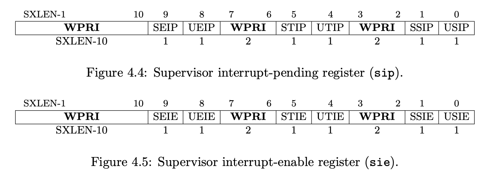

<!DOCTYPE html><html lang="zh-CN"><head><meta charset="UTF-8"><meta name="viewport" content="width=device-width,height=device-height,initial-scale=1.0"><meta name="apple-mobile-web-app-capable" content="yes"><meta http-equiv="X-UA-Compatible" content="ie=edge"><meta property="og:type" content="website"><meta name="twitter:card" content="summary"><style>@media screen{body,html{background:#000;height:100%;margin:0;overflow:hidden}[data-bespoke-marp-fragment=inactive]{visibility:hidden}.bespoke-marp-osc{display:none;opacity:0}.bespoke-marp-parent{bottom:0;left:0;position:absolute;right:0;top:0}.bespoke-marp-parent>.bespoke-marp-osc{background:rgba(0,0,0,.65);border-radius:7px;bottom:50px;color:#fff;display:block;font-family:Helvetica,Arial,sans-serif;font-size:16px;left:50%;line-height:0;opacity:1;padding:12px;position:absolute;touch-action:manipulation;-webkit-transform:translateX(-50%);transform:translateX(-50%);-webkit-transition:opacity .2s linear;transition:opacity .2s linear;-webkit-user-select:none;-moz-user-select:none;-ms-user-select:none;user-select:none;white-space:nowrap;z-index:1;will-change:transform}.bespoke-marp-parent>.bespoke-marp-osc>*{margin-left:6px}.bespoke-marp-parent>.bespoke-marp-osc>:first-child{margin-left:0}.bespoke-marp-parent>.bespoke-marp-osc>span{opacity:.8}.bespoke-marp-parent>.bespoke-marp-osc>span[data-bespoke-marp-osc=page]{display:inline-block;min-width:140px;text-align:center}.bespoke-marp-parent>.bespoke-marp-osc>button{-webkit-appearance:none;-moz-appearance:none;appearance:none;background-color:transparent;border:0;color:inherit;cursor:pointer;font-size:inherit;opacity:.8;outline:none;padding:0;-webkit-transition:opacity .2s linear;transition:opacity .2s linear;-webkit-tap-highlight-color:transparent}.bespoke-marp-parent>.bespoke-marp-osc>button:disabled{cursor:not-allowed;opacity:.15!important}.bespoke-marp-parent>.bespoke-marp-osc>button:hover{opacity:1}.bespoke-marp-parent>.bespoke-marp-osc>button:hover:active{opacity:.6}.bespoke-marp-parent>.bespoke-marp-osc>button:hover:not(:disabled){-webkit-transition:none;transition:none}.bespoke-marp-parent>.bespoke-marp-osc>button[data-bespoke-marp-osc=prev]{background:transparent url("") no-repeat 50%;background-size:contain;height:32px;overflow:hidden;text-indent:100%;white-space:nowrap;width:32px}.bespoke-marp-parent>.bespoke-marp-osc>button[data-bespoke-marp-osc=next]{background:transparent url("") no-repeat 50%;background-size:contain;height:32px;overflow:hidden;text-indent:100%;white-space:nowrap;width:32px}.bespoke-marp-parent>.bespoke-marp-osc>button[data-bespoke-marp-osc=fullscreen]{background:transparent url("") no-repeat 50%;background-size:contain;height:32px;overflow:hidden;text-indent:100%;white-space:nowrap;width:32px}.bespoke-marp-parent>.bespoke-marp-osc>button[data-bespoke-marp-osc=fullscreen].exit{background-image:url("")}.bespoke-marp-parent.bespoke-marp-inactive{cursor:none}.bespoke-marp-parent.bespoke-marp-inactive>.bespoke-marp-osc{opacity:0;pointer-events:none}svg.bespoke-marp-slide{height:100%;left:0;pointer-events:none;position:absolute;top:0;width:100%;z-index:-1}svg.bespoke-marp-slide.bespoke-marp-active{pointer-events:auto;z-index:0}svg.bespoke-marp-slide[data-bespoke-marp-load=hideable]{display:none}svg.bespoke-marp-slide[data-bespoke-marp-load=hideable].bespoke-marp-active{display:block}.bespoke-progress-parent{background:#222;display:-webkit-box;display:flex;height:5px;width:100%}.bespoke-progress-parent+.bespoke-marp-parent{top:5px}.bespoke-progress-parent .bespoke-progress-bar{-webkit-box-flex:0;flex:0 0 0;background:#0288d1;-webkit-transition:-webkit-flex-basis .2s cubic-bezier(0,1,1,1);transition:-webkit-flex-basis .2s cubic-bezier(0,1,1,1);transition:flex-basis .2s cubic-bezier(0,1,1,1);transition:flex-basis .2s cubic-bezier(0,1,1,1),-webkit-flex-basis .2s cubic-bezier(0,1,1,1)}}@media print{.bespoke-marp-osc,.bespoke-progress-parent{display:none!important;-webkit-transition:none!important;transition:none!important}.bespoke-marp-parent{top:0}}</style><style>div#p>svg>foreignObject>section{width:1280px;height:720px;box-sizing:border-box;overflow:hidden;position:relative;scroll-snap-align:center center}div#p>svg>foreignObject>section:after{bottom:0;content:attr(data-marpit-pagination);padding:inherit;pointer-events:none;position:absolute;right:0}div#p>svg>foreignObject>section:not([data-marpit-pagination]):after{display:none}/* Normalization */div#p>svg>foreignObject>section h1{font-size:2em;margin:0.67em 0}div#p>svg>foreignObject>section video::-webkit-media-controls{will-change:transform}@page{size:960px 720px;margin:0}@media print{body,html{background-color:#fff;margin:0;page-break-inside:avoid;break-inside:avoid-page}div#p>svg>foreignObject>section{page-break-before:always;break-before:page}div#p>svg>foreignObject>section,div#p>svg>foreignObject>section *{-webkit-print-color-adjust:exact!important;color-adjust:exact!important}div#p>svg[data-marpit-svg]{display:block;height:100vh;width:100vw}}div#p>svg>foreignObject>section svg[data-marp-fitting=svg]{display:block;height:auto;width:100%}@supports (-ms-ime-align:auto){div#p>svg>foreignObject>section svg[data-marp-fitting=svg]{position:static}}div#p>svg>foreignObject>section svg[data-marp-fitting=svg].__reflow__{content:""}@supports (-ms-ime-align:auto){div#p>svg>foreignObject>section svg[data-marp-fitting=svg].__reflow__{position:relative}}div#p>svg>foreignObject>section [data-marp-fitting-svg-content]{display:table;white-space:nowrap}div#p>svg>foreignObject>section [data-marp-fitting-svg-content-wrap]{white-space:pre}div#p>svg>foreignObject>section img[data-marp-twemoji]{background:transparent;height:1em;margin:0 .05em 0 .1em;vertical-align:-.1em;width:1em}
/*!
 * Marp default theme.
 *
 * @theme default
 * @author Yuki Hattori
 *
 * @auto-scaling true
 * @size 4:3 960px 720px
 */div#p>svg>foreignObject>section .octicon{display:inline-block;fill:currentColor;vertical-align:text-bottom}div#p>svg>foreignObject>section .anchor{float:left;line-height:1;margin-left:-20px;padding-right:4px}div#p>svg>foreignObject>section .anchor:focus{outline:none}div#p>svg>foreignObject>section h1 .octicon-link,div#p>svg>foreignObject>section h2 .octicon-link,div#p>svg>foreignObject>section h3 .octicon-link,div#p>svg>foreignObject>section h4 .octicon-link,div#p>svg>foreignObject>section h5 .octicon-link,div#p>svg>foreignObject>section h6 .octicon-link{color:#1b1f23;vertical-align:middle;visibility:hidden}div#p>svg>foreignObject>section h1:hover .anchor,div#p>svg>foreignObject>section h2:hover .anchor,div#p>svg>foreignObject>section h3:hover .anchor,div#p>svg>foreignObject>section h4:hover .anchor,div#p>svg>foreignObject>section h5:hover .anchor,div#p>svg>foreignObject>section h6:hover .anchor{text-decoration:none}div#p>svg>foreignObject>section h1:hover .anchor .octicon-link,div#p>svg>foreignObject>section h2:hover .anchor .octicon-link,div#p>svg>foreignObject>section h3:hover .anchor .octicon-link,div#p>svg>foreignObject>section h4:hover .anchor .octicon-link,div#p>svg>foreignObject>section h5:hover .anchor .octicon-link,div#p>svg>foreignObject>section h6:hover .anchor .octicon-link{visibility:visible}div#p>svg>foreignObject>section{-ms-text-size-adjust:100%;-webkit-text-size-adjust:100%;color:#24292e;font-family:-apple-system,BlinkMacSystemFont,Segoe UI,Helvetica,Arial,sans-serif,Apple Color Emoji,Segoe UI Emoji,Segoe UI Symbol;font-size:16px;line-height:1.5;word-wrap:break-word}div#p>svg>foreignObject>section .pl-c{color:#6a737d}div#p>svg>foreignObject>section .pl-c1,div#p>svg>foreignObject>section .pl-s .pl-v{color:#005cc5}div#p>svg>foreignObject>section .pl-e,div#p>svg>foreignObject>section .pl-en{color:#6f42c1}div#p>svg>foreignObject>section .pl-s .pl-s1,div#p>svg>foreignObject>section .pl-smi{color:#24292e}div#p>svg>foreignObject>section .pl-ent{color:#22863a}div#p>svg>foreignObject>section .pl-k{color:#d73a49}div#p>svg>foreignObject>section .pl-pds,div#p>svg>foreignObject>section .pl-s,div#p>svg>foreignObject>section .pl-s .pl-pse .pl-s1,div#p>svg>foreignObject>section .pl-sr,div#p>svg>foreignObject>section .pl-sr .pl-cce,div#p>svg>foreignObject>section .pl-sr .pl-sra,div#p>svg>foreignObject>section .pl-sr .pl-sre{color:#032f62}div#p>svg>foreignObject>section .pl-smw,div#p>svg>foreignObject>section .pl-v{color:#e36209}div#p>svg>foreignObject>section .pl-bu{color:#b31d28}div#p>svg>foreignObject>section .pl-ii{background-color:#b31d28;color:#fafbfc}div#p>svg>foreignObject>section .pl-c2{background-color:#d73a49;color:#fafbfc}div#p>svg>foreignObject>section .pl-c2:before{content:"^M"}div#p>svg>foreignObject>section .pl-sr .pl-cce{color:#22863a;font-weight:700}div#p>svg>foreignObject>section .pl-ml{color:#735c0f}div#p>svg>foreignObject>section .pl-mh,div#p>svg>foreignObject>section .pl-mh .pl-en,div#p>svg>foreignObject>section .pl-ms{color:#005cc5;font-weight:700}div#p>svg>foreignObject>section .pl-mi{color:#24292e;font-style:italic}div#p>svg>foreignObject>section .pl-mb{color:#24292e;font-weight:700}div#p>svg>foreignObject>section .pl-md{background-color:#ffeef0;color:#b31d28}div#p>svg>foreignObject>section .pl-mi1{background-color:#f0fff4;color:#22863a}div#p>svg>foreignObject>section .pl-mc{background-color:#ffebda;color:#e36209}div#p>svg>foreignObject>section .pl-mi2{background-color:#005cc5;color:#f6f8fa}div#p>svg>foreignObject>section .pl-mdr{color:#6f42c1;font-weight:700}div#p>svg>foreignObject>section .pl-ba{color:#586069}div#p>svg>foreignObject>section .pl-sg{color:#959da5}div#p>svg>foreignObject>section .pl-corl{color:#032f62;text-decoration:underline}div#p>svg>foreignObject>section details{display:block}div#p>svg>foreignObject>section summary{display:list-item}div#p>svg>foreignObject>section a{background-color:transparent}div#p>svg>foreignObject>section a:active,div#p>svg>foreignObject>section a:hover{outline-width:0}div#p>svg>foreignObject>section strong{font-weight:inherit;font-weight:bolder}div#p>svg>foreignObject>section h1{margin:.67em 0}div#p>svg>foreignObject>section img{border-style:none}div#p>svg>foreignObject>section code,div#p>svg>foreignObject>section kbd,div#p>svg>foreignObject>section pre{font-family:monospace,monospace;font-size:1em}div#p>svg>foreignObject>section hr{box-sizing:content-box;overflow:visible}div#p>svg>foreignObject>section input{font:inherit;margin:0;overflow:visible}div#p>svg>foreignObject>section [type=checkbox]{padding:0}div#p>svg>foreignObject>section *,div#p>svg>foreignObject>section [type=checkbox]{box-sizing:border-box}div#p>svg>foreignObject>section input{font-family:inherit;font-size:inherit;line-height:inherit}div#p>svg>foreignObject>section a{color:#0366d6;text-decoration:none}div#p>svg>foreignObject>section a:hover{text-decoration:underline}div#p>svg>foreignObject>section strong{font-weight:600}div#p>svg>foreignObject>section hr{background:transparent;border-bottom:1px solid #dfe2e5;height:0;margin:15px 0;overflow:hidden}div#p>svg>foreignObject>section hr:after,div#p>svg>foreignObject>section hr:before{content:"";display:table}div#p>svg>foreignObject>section hr:after{clear:both}div#p>svg>foreignObject>section table{border-collapse:collapse;border-spacing:0}div#p>svg>foreignObject>section td,div#p>svg>foreignObject>section th{padding:0}div#p>svg>foreignObject>section details summary{cursor:pointer}div#p>svg>foreignObject>section h1,div#p>svg>foreignObject>section h2,div#p>svg>foreignObject>section h3,div#p>svg>foreignObject>section h4,div#p>svg>foreignObject>section h5,div#p>svg>foreignObject>section h6{margin-bottom:0;margin-top:0}div#p>svg>foreignObject>section h1{font-size:32px}div#p>svg>foreignObject>section h1,div#p>svg>foreignObject>section h2{font-weight:600}div#p>svg>foreignObject>section h2{font-size:24px}div#p>svg>foreignObject>section h3{font-size:20px}div#p>svg>foreignObject>section h3,div#p>svg>foreignObject>section h4{font-weight:600}div#p>svg>foreignObject>section h4{font-size:16px}div#p>svg>foreignObject>section h5{font-size:14px}div#p>svg>foreignObject>section h5,div#p>svg>foreignObject>section h6{font-weight:600}div#p>svg>foreignObject>section h6{font-size:12px}div#p>svg>foreignObject>section p{margin-bottom:10px;margin-top:0}div#p>svg>foreignObject>section blockquote{margin:0}div#p>svg>foreignObject>section ol,div#p>svg>foreignObject>section ul{margin-bottom:0;margin-top:0;padding-left:0}div#p>svg>foreignObject>section ol ol,div#p>svg>foreignObject>section ul ol{list-style-type:lower-roman}div#p>svg>foreignObject>section ol ol ol,div#p>svg>foreignObject>section ol ul ol,div#p>svg>foreignObject>section ul ol ol,div#p>svg>foreignObject>section ul ul ol{list-style-type:lower-alpha}div#p>svg>foreignObject>section dd{margin-left:0}div#p>svg>foreignObject>section code,div#p>svg>foreignObject>section pre{font-family:SFMono-Regular,Consolas,Liberation Mono,Menlo,Courier,monospace;font-size:12px}div#p>svg>foreignObject>section pre{margin-bottom:0;margin-top:0}div#p>svg>foreignObject>section input::-webkit-inner-spin-button,div#p>svg>foreignObject>section input::-webkit-outer-spin-button{-webkit-appearance:none;appearance:none;margin:0}div#p>svg>foreignObject>section .border{border:1px solid #e1e4e8!important}div#p>svg>foreignObject>section .border-0{border:0!important}div#p>svg>foreignObject>section .border-bottom{border-bottom:1px solid #e1e4e8!important}div#p>svg>foreignObject>section .rounded-1{border-radius:3px!important}div#p>svg>foreignObject>section .bg-white{background-color:#fff!important}div#p>svg>foreignObject>section .bg-gray-light{background-color:#fafbfc!important}div#p>svg>foreignObject>section .text-gray-light{color:#6a737d!important}div#p>svg>foreignObject>section .mb-0{margin-bottom:0!important}div#p>svg>foreignObject>section .my-2{margin-bottom:8px!important;margin-top:8px!important}div#p>svg>foreignObject>section .py-0{padding-bottom:0!important;padding-top:0!important}div#p>svg>foreignObject>section .py-2{padding-bottom:8px!important;padding-top:8px!important}div#p>svg>foreignObject>section .pl-3,div#p>svg>foreignObject>section .px-3{padding-left:16px!important}div#p>svg>foreignObject>section .px-3{padding-right:16px!important}div#p>svg>foreignObject>section .f6{font-size:12px!important}div#p>svg>foreignObject>section .lh-condensed{line-height:1.25!important}div#p>svg>foreignObject>section .text-bold{font-weight:600!important}div#p>svg>foreignObject>section:after,div#p>svg>foreignObject>section:before{
  /* content:""; */display:table}div#p>svg>foreignObject>section:after{clear:both}div#p>svg>foreignObject>section>:first-child{margin-top:0!important}div#p>svg>foreignObject>section>:last-child{margin-bottom:0!important}div#p>svg>foreignObject>section a:not([href]){color:inherit;text-decoration:none}div#p>svg>foreignObject>section blockquote,div#p>svg>foreignObject>section dl,div#p>svg>foreignObject>section ol,div#p>svg>foreignObject>section p,div#p>svg>foreignObject>section pre,div#p>svg>foreignObject>section table,div#p>svg>foreignObject>section ul{margin-bottom:16px;margin-top:0}div#p>svg>foreignObject>section hr{background-color:#e1e4e8;border:0;height:.25em;margin:24px 0;padding:0}div#p>svg>foreignObject>section blockquote{border-left:.25em solid #dfe2e5;color:#6a737d;padding:0 1em}div#p>svg>foreignObject>section blockquote>:first-child{margin-top:0}div#p>svg>foreignObject>section blockquote>:last-child{margin-bottom:0}div#p>svg>foreignObject>section kbd{border:1px solid #c6cbd1;border-bottom-color:#959da5;box-shadow:inset 0 -1px 0 #959da5;font-size:11px}div#p>svg>foreignObject>section h1,div#p>svg>foreignObject>section h2,div#p>svg>foreignObject>section h3,div#p>svg>foreignObject>section h4,div#p>svg>foreignObject>section h5,div#p>svg>foreignObject>section h6{font-weight:600;line-height:1.25;margin-bottom:16px;margin-top:24px}div#p>svg>foreignObject>section h1{font-size:2em}div#p>svg>foreignObject>section h1,div#p>svg>foreignObject>section h2{border-bottom:1px solid #eaecef;padding-bottom:.3em}div#p>svg>foreignObject>section h2{font-size:1.5em}div#p>svg>foreignObject>section h3{font-size:1.25em}div#p>svg>foreignObject>section h4{font-size:1em}div#p>svg>foreignObject>section h5{font-size:.875em}div#p>svg>foreignObject>section h6{color:#6a737d;font-size:.85em}div#p>svg>foreignObject>section ol,div#p>svg>foreignObject>section ul{padding-left:2em}div#p>svg>foreignObject>section ol ol,div#p>svg>foreignObject>section ol ul,div#p>svg>foreignObject>section ul ol,div#p>svg>foreignObject>section ul ul{margin-bottom:0;margin-top:0}div#p>svg>foreignObject>section li{word-wrap:break-all}div#p>svg>foreignObject>section li>p{margin-top:16px}div#p>svg>foreignObject>section li+li{margin-top:.25em}div#p>svg>foreignObject>section dl{padding:0}div#p>svg>foreignObject>section dl dt{font-size:1em;font-style:italic;font-weight:600;margin-top:16px;padding:0}div#p>svg>foreignObject>section dl dd{margin-bottom:16px;padding:0 16px}div#p>svg>foreignObject>section table{display:block;overflow:auto;width:100%}div#p>svg>foreignObject>section table th{font-weight:600}div#p>svg>foreignObject>section table td,div#p>svg>foreignObject>section table th{border:1px solid #dfe2e5;padding:6px 13px}div#p>svg>foreignObject>section table tr{background-color:#fff;border-top:1px solid #c6cbd1}div#p>svg>foreignObject>section table tr:nth-child(2n){background-color:#f6f8fa}div#p>svg>foreignObject>section img{background-color:#fff;box-sizing:content-box;max-width:100%}div#p>svg>foreignObject>section img[align=right]{padding-left:20px}div#p>svg>foreignObject>section img[align=left]{padding-right:20px}div#p>svg>foreignObject>section code{background-color:rgba(27,31,35,.05);border-radius:3px;font-size:85%;margin:0;padding:.2em .4em}div#p>svg>foreignObject>section pre{word-wrap:normal}div#p>svg>foreignObject>section pre>code{background:transparent;border:0;font-size:100%;margin:0;padding:0;white-space:pre;word-break:normal}div#p>svg>foreignObject>section .highlight{margin-bottom:16px}div#p>svg>foreignObject>section .highlight pre{margin-bottom:0;word-break:normal}div#p>svg>foreignObject>section pre{background-color:#f6f8fa;border-radius:3px;font-size:85%;line-height:1.45;overflow:auto;padding:16px}div#p>svg>foreignObject>section pre code{background-color:transparent;border:0;display:inline;line-height:inherit;margin:0;max-width:auto;overflow:visible;padding:0;word-wrap:normal}div#p>svg>foreignObject>section .commit-tease-sha{color:#444d56;display:inline-block;font-family:SFMono-Regular,Consolas,Liberation Mono,Menlo,Courier,monospace;font-size:90%}div#p>svg>foreignObject>section .blob-wrapper{border-bottom-left-radius:3px;border-bottom-right-radius:3px;overflow-x:auto;overflow-y:hidden}div#p>svg>foreignObject>section .blob-wrapper-embedded{max-height:240px;overflow-y:auto}div#p>svg>foreignObject>section .blob-num{-moz-user-select:none;-ms-user-select:none;-webkit-user-select:none;color:rgba(27,31,35,.3);cursor:pointer;font-family:SFMono-Regular,Consolas,Liberation Mono,Menlo,Courier,monospace;font-size:12px;line-height:20px;min-width:50px;padding-left:10px;padding-right:10px;text-align:right;user-select:none;vertical-align:top;white-space:nowrap;width:1%}div#p>svg>foreignObject>section .blob-num:hover{color:rgba(27,31,35,.6)}div#p>svg>foreignObject>section .blob-num:before{content:attr(data-line-number)}div#p>svg>foreignObject>section .blob-code{line-height:20px;padding-left:10px;padding-right:10px;position:relative;vertical-align:top}div#p>svg>foreignObject>section .blob-code-inner{color:#24292e;font-family:SFMono-Regular,Consolas,Liberation Mono,Menlo,Courier,monospace;font-size:12px;overflow:visible;white-space:pre;word-wrap:normal}div#p>svg>foreignObject>section .pl-token.active,div#p>svg>foreignObject>section .pl-token:hover{background:#ffea7f;cursor:pointer}div#p>svg>foreignObject>section kbd{background-color:#fafbfc;border:1px solid #d1d5da;border-bottom-color:#c6cbd1;border-radius:3px;box-shadow:inset 0 -1px 0 #c6cbd1;color:#444d56;display:inline-block;font:11px SFMono-Regular,Consolas,Liberation Mono,Menlo,Courier,monospace;line-height:10px;padding:3px 5px;vertical-align:middle}div#p>svg>foreignObject>section :checked+.radio-label{border-color:#0366d6;position:relative;z-index:1}div#p>svg>foreignObject>section .tab-size[data-tab-size="1"]{-moz-tab-size:1;-o-tab-size:1;tab-size:1}div#p>svg>foreignObject>section .tab-size[data-tab-size="2"]{-moz-tab-size:2;-o-tab-size:2;tab-size:2}div#p>svg>foreignObject>section .tab-size[data-tab-size="3"]{-moz-tab-size:3;-o-tab-size:3;tab-size:3}div#p>svg>foreignObject>section .tab-size[data-tab-size="4"]{-moz-tab-size:4;-o-tab-size:4;tab-size:4}div#p>svg>foreignObject>section .tab-size[data-tab-size="5"]{-moz-tab-size:5;-o-tab-size:5;tab-size:5}div#p>svg>foreignObject>section .tab-size[data-tab-size="6"]{-moz-tab-size:6;-o-tab-size:6;tab-size:6}div#p>svg>foreignObject>section .tab-size[data-tab-size="7"]{-moz-tab-size:7;-o-tab-size:7;tab-size:7}div#p>svg>foreignObject>section .tab-size[data-tab-size="8"]{-moz-tab-size:8;-o-tab-size:8;tab-size:8}div#p>svg>foreignObject>section .tab-size[data-tab-size="9"]{-moz-tab-size:9;-o-tab-size:9;tab-size:9}div#p>svg>foreignObject>section .tab-size[data-tab-size="10"]{-moz-tab-size:10;-o-tab-size:10;tab-size:10}div#p>svg>foreignObject>section .tab-size[data-tab-size="11"]{-moz-tab-size:11;-o-tab-size:11;tab-size:11}div#p>svg>foreignObject>section .tab-size[data-tab-size="12"]{-moz-tab-size:12;-o-tab-size:12;tab-size:12}div#p>svg>foreignObject>section .task-list-item{list-style-type:none}div#p>svg>foreignObject>section .task-list-item+.task-list-item{margin-top:3px}div#p>svg>foreignObject>section .task-list-item input{margin:0 .2em .25em -1.6em;vertical-align:middle}div#p>svg>foreignObject>section hr{border-bottom-color:#eee}div#p>svg>foreignObject>section .pl-0{padding-left:0!important}div#p>svg>foreignObject>section .pl-1{padding-left:4px!important}div#p>svg>foreignObject>section .pl-2{padding-left:8px!important}div#p>svg>foreignObject>section .pl-3{padding-left:16px!important}div#p>svg>foreignObject>section .pl-4{padding-left:24px!important}div#p>svg>foreignObject>section .pl-5{padding-left:32px!important}div#p>svg>foreignObject>section .pl-6{padding-left:40px!important}div#p>svg>foreignObject>section .pl-7{padding-left:48px!important}div#p>svg>foreignObject>section .pl-8{padding-left:64px!important}div#p>svg>foreignObject>section .pl-9{padding-left:80px!important}div#p>svg>foreignObject>section .pl-10{padding-left:96px!important}div#p>svg>foreignObject>section .pl-11{padding-left:112px!important}div#p>svg>foreignObject>section .pl-12{padding-left:128px!important}div#p>svg>foreignObject>section .hljs{display:block;background:#fff;padding:.5em;color:#333;overflow-x:auto}div#p>svg>foreignObject>section .hljs-comment,div#p>svg>foreignObject>section .hljs-meta{color:#969896}div#p>svg>foreignObject>section .hljs-emphasis,div#p>svg>foreignObject>section .hljs-quote,div#p>svg>foreignObject>section .hljs-strong,div#p>svg>foreignObject>section .hljs-template-variable,div#p>svg>foreignObject>section .hljs-variable{color:#df5000}div#p>svg>foreignObject>section .hljs-keyword,div#p>svg>foreignObject>section .hljs-selector-tag,div#p>svg>foreignObject>section .hljs-type{color:#d73a49}div#p>svg>foreignObject>section .hljs-attribute,div#p>svg>foreignObject>section .hljs-bullet,div#p>svg>foreignObject>section .hljs-literal,div#p>svg>foreignObject>section .hljs-symbol{color:#0086b3}div#p>svg>foreignObject>section .hljs-name,div#p>svg>foreignObject>section .hljs-section{color:#63a35c}div#p>svg>foreignObject>section .hljs-tag{color:#333}div#p>svg>foreignObject>section .hljs-attr,div#p>svg>foreignObject>section .hljs-selector-attr,div#p>svg>foreignObject>section .hljs-selector-class,div#p>svg>foreignObject>section .hljs-selector-id,div#p>svg>foreignObject>section .hljs-selector-pseudo,div#p>svg>foreignObject>section .hljs-title{color:#6f42c1}div#p>svg>foreignObject>section .hljs-addition{color:#55a532;background-color:#eaffea}div#p>svg>foreignObject>section .hljs-deletion{color:#bd2c00;background-color:#ffecec}div#p>svg>foreignObject>section .hljs-link{text-decoration:underline}div#p>svg>foreignObject>section .hljs-number{color:#005cc5}div#p>svg>foreignObject>section .hljs-string{color:#032f62}div#p>svg>foreignObject>section svg[data-marp-fitting=svg]{max-height:563px}div#p>svg>foreignObject>section h1{color:#246;font-size:1.6em}div#p>svg>foreignObject>section h1,div#p>svg>foreignObject>section h2{border-bottom:none}div#p>svg>foreignObject>section h2{font-size:1.3em}div#p>svg>foreignObject>section h3{font-size:1.1em}div#p>svg>foreignObject>section h4{font-size:1.05em}div#p>svg>foreignObject>section h5{font-size:1em}div#p>svg>foreignObject>section h6{font-size:.9em}div#p>svg>foreignObject>section h1 strong,div#p>svg>foreignObject>section h2 strong,div#p>svg>foreignObject>section h3 strong,div#p>svg>foreignObject>section h4 strong,div#p>svg>foreignObject>section h5 strong,div#p>svg>foreignObject>section h6 strong{font-weight:inherit;color:#48c}div#p>svg>foreignObject>section hr{height:0;padding-top:.25em}div#p>svg>foreignObject>section pre{border:1px solid #999;line-height:1.15;overflow:visible}div#p>svg>foreignObject>section pre code svg[data-marp-fitting=svg]{max-height:529px}div#p>svg>foreignObject>section footer,div#p>svg>foreignObject>section header{margin:0;position:absolute;left:30px;color:hsla(0,0%,40%,.75);font-size:18px}div#p>svg>foreignObject>section header{top:21px}div#p>svg>foreignObject>section footer{bottom:21px}div#p>svg>foreignObject>section{-webkit-box-align:stretch;align-items:stretch;background:#fff;display:-webkit-box;display:flex;-webkit-box-orient:vertical;-webkit-box-direction:normal;flex-direction:column;flex-wrap:nowrap;font-size:29px;height:720px;-webkit-box-pack:center;justify-content:center;padding:78.5px;width:1280px}div#p>svg>foreignObject>section>:last-child,div#p>svg>foreignObject>section[data-footer]>:nth-last-child(2){margin-bottom:0}div#p>svg>foreignObject>section>:first-child,div#p>svg>foreignObject>section>header:first-child+*{margin-top:0}div#p>svg>foreignObject>section:after{position:absolute;padding:0;right:30px;bottom:21px;font-size:24px;color:#777}div#p>svg>foreignObject>section.invert{background-color:#222;color:#e6eaf0}div#p>svg>foreignObject>section.invert:after{color:#999}div#p>svg>foreignObject>section.invert img{background-color:transparent}div#p>svg>foreignObject>section.invert a{color:#50b3ff}div#p>svg>foreignObject>section.invert h1{color:#a3c5e7}div#p>svg>foreignObject>section.invert h2,div#p>svg>foreignObject>section.invert h3,div#p>svg>foreignObject>section.invert h4,div#p>svg>foreignObject>section.invert h5{color:#ebeff5}div#p>svg>foreignObject>section.invert blockquote,div#p>svg>foreignObject>section.invert h6{border-color:#3d3f43;color:#939699}div#p>svg>foreignObject>section.invert h1 strong,div#p>svg>foreignObject>section.invert h2 strong,div#p>svg>foreignObject>section.invert h3 strong,div#p>svg>foreignObject>section.invert h4 strong,div#p>svg>foreignObject>section.invert h5 strong,div#p>svg>foreignObject>section.invert h6 strong{color:#7bf}div#p>svg>foreignObject>section.invert hr{background-color:#3d3f43}div#p>svg>foreignObject>section.invert footer,div#p>svg>foreignObject>section.invert header{color:hsla(0,0%,60%,.75)}div#p>svg>foreignObject>section.invert code,div#p>svg>foreignObject>section.invert kbd{background-color:#111}div#p>svg>foreignObject>section.invert kbd{border-color:#666;box-shadow:inset 0 -1px 0 #555;color:#e6eaf0}div#p>svg>foreignObject>section.invert table tr{background-color:#12181d;border-color:#60657b}div#p>svg>foreignObject>section.invert table tr:nth-child(2n){background-color:#1b2024}div#p>svg>foreignObject>section.invert table td,div#p>svg>foreignObject>section.invert table th{border-color:#5b5e61}div#p>svg>foreignObject>section.invert pre{background-color:#0a0e12;border-color:#777}div#p>svg>foreignObject>section.invert pre code{background-color:transparent}div#p>svg>foreignObject>section[data-color] h1,div#p>svg>foreignObject>section[data-color] h2,div#p>svg>foreignObject>section[data-color] h3,div#p>svg>foreignObject>section[data-color] h4,div#p>svg>foreignObject>section[data-color] h5,div#p>svg>foreignObject>section[data-color] h6{color:currentColor}div#p>svg>foreignObject>section{width:960px;height:720px}div#p>svg>foreignObject>section[data-marpit-advanced-background=background]{display:block!important;padding:0!important}div#p>svg>foreignObject>section[data-marpit-advanced-background=background]:after,div#p>svg>foreignObject>section[data-marpit-advanced-background=background]:before,div#p>svg>foreignObject>section[data-marpit-advanced-background=content]:after,div#p>svg>foreignObject>section[data-marpit-advanced-background=content]:before{display:none!important}div#p>svg>foreignObject>section[data-marpit-advanced-background=background]>div[data-marpit-advanced-background-container]{all:initial;display:flex;flex-direction:row;height:100%;overflow:hidden;width:100%}div#p>svg>foreignObject>section[data-marpit-advanced-background=background]>div[data-marpit-advanced-background-container][data-marpit-advanced-background-direction=vertical]{flex-direction:column}div#p>svg>foreignObject>section[data-marpit-advanced-background=background][data-marpit-advanced-background-split]>div[data-marpit-advanced-background-container]{width:var(--marpit-advanced-background-split,50%)}div#p>svg>foreignObject>section[data-marpit-advanced-background=background][data-marpit-advanced-background-split=right]>div[data-marpit-advanced-background-container]{margin-left:calc(100% - var(--marpit-advanced-background-split, 50%))}div#p>svg>foreignObject>section[data-marpit-advanced-background=background]>div[data-marpit-advanced-background-container]>figure{all:initial;background-position:center;background-repeat:no-repeat;background-size:cover;flex:auto;margin:0}div#p>svg>foreignObject>section[data-marpit-advanced-background=content],div#p>svg>foreignObject>section[data-marpit-advanced-background=pseudo]{background:transparent!important}div#p>svg>foreignObject>section[data-marpit-advanced-background=pseudo],div#p>svg[data-marpit-svg]>foreignObject[data-marpit-advanced-background=pseudo]{pointer-events:none!important}div#p>svg>foreignObject>section[data-marpit-advanced-background-split]{width:100%;height:100%}</style></head><body><div class="bespoke-marp-osc"><button data-bespoke-marp-osc="prev" tabindex="-1" title="Previous slide">Previous slide</button><span data-bespoke-marp-osc="page"></span><button data-bespoke-marp-osc="next" tabindex="-1" title="Next slide">Next slide</button><button data-bespoke-marp-osc="fullscreen" tabindex="-1" title="Toggle fullscreen (f)">Toggle fullscreen</button></div><div id="p"><svg data-marpit-svg="" viewBox="0 0 960 720"><foreignObject width="960" height="720"><section id="1" data-paginate="true" data-marpit-pagination="1" data-marpit-pagination-total="128" style="--paginate:true;">
<h1>rCore Tutorial</h1>
<p>王润基、潘庆霖<br />
清华大学计算机系</p>
<p>2019.12.15 @ OS2ATC</p>
</section>
</foreignObject></svg><svg data-marpit-svg="" viewBox="0 0 960 720"><foreignObject width="960" height="720"><section id="2" data-marpit-fragments="6" data-paginate="true" data-marpit-pagination="2" data-marpit-pagination-total="128" style="--paginate:true;">
<h1>rCore 项目介绍</h1>
<ul>
<li data-marpit-fragment="1">
<p>初衷：尝试用 Rust 语言写 OS</p>
</li>
<li data-marpit-fragment="2">
<p>始于：清华大学操作系统课 课程设计（2018春）</p>
</li>
<li data-marpit-fragment="3">
<p>发展：在 OS 课大实验中普及推广（20+ 贡献者）</p>
</li>
<li data-marpit-fragment="4">
<p>现状：</p>
<ul>
<li data-marpit-fragment="5">兼容 Alpine Linux (musl libc)：Busybox, GCC, Nginx</li>
<li data-marpit-fragment="6">支持四种指令集：x86_64, ARM64, RISC-V, MIPS32</li>
</ul>
</li>
</ul>
</section>
</foreignObject></svg><svg data-marpit-svg="" viewBox="0 0 960 720"><foreignObject width="960" height="720"><section id="3" data-paginate="true" data-marpit-pagination="3" data-marpit-pagination-total="128" style="--paginate:true;">
<h2>开源开放</h2>
<p></p>
<p><a href="https://github.com/rcore-os">https://github.com/rcore-os</a><br />
<a href="http://os.cs.tsinghua.edu.cn/oscourse/OS2019spring/projects">http://os.cs.tsinghua.edu.cn/oscourse/OS2019spring/projects</a></p>
</section>
</foreignObject></svg><svg data-marpit-svg="" viewBox="0 0 960 720"><foreignObject width="960" height="720"><section id="4" data-marpit-fragments="5" data-paginate="true" data-marpit-pagination="4" data-marpit-pagination-total="128" style="--paginate:true;">
<h2>Rust OS 相关工作</h2>
<ul>
<li data-marpit-fragment="1">
<p>Redox OS：完成度最高的微内核 OS</p>
</li>
<li data-marpit-fragment="2">
<p>CS140e：Stanford 实验性课程，Rust OS for Raspi3</p>
</li>
<li data-marpit-fragment="3">
<p>Tock OS：Stanford 嵌入式操作系统，充分利用 Rust 特性</p>
</li>
<li data-marpit-fragment="4">
<p>RVirt：MIT RISC-V Hypervisor</p>
</li>
<li data-marpit-fragment="5">
<p>Writing an OS in Rust —— BlogOS：详尽的 Rust OS 教程</p>
</li>
</ul>
</section>
</foreignObject></svg><svg data-marpit-svg="" viewBox="0 0 960 720"><foreignObject width="960" height="720"><section id="5" data-marpit-fragments="5" data-paginate="true" data-marpit-pagination="5" data-marpit-pagination-total="128" style="--paginate:true;">
<h2>Rust 在产业界的应用情况</h2>
<ul>
<li data-marpit-fragment="1">
<p>蚂蚁金服：Occlum（SGX LibOS）</p>
</li>
<li data-marpit-fragment="2">
<p>百度：Rust SGX SDK</p>
</li>
<li data-marpit-fragment="3">
<p>字节跳动：高性能服务端</p>
</li>
<li data-marpit-fragment="4">
<p>PingCAP：TiKV 高性能分布式数据库</p>
</li>
<li data-marpit-fragment="5">
<p>Facebook：Libra</p>
</li>
</ul>
</section>
</foreignObject></svg><svg data-marpit-svg="" viewBox="0 0 960 720"><foreignObject width="960" height="720"><section id="6" data-marpit-fragments="6" data-paginate="true" data-marpit-pagination="6" data-marpit-pagination-total="128" style="--paginate:true;">
<h2>为什么用 Rust？</h2>
<p>C 语言的两大问题：</p>
<ul>
<li data-marpit-fragment="1">内存不安全</li>
<li data-marpit-fragment="2">缺少现代语言特性和好用的工具链</li>
</ul>
<p>C++？</p>
<ul>
<li data-marpit-fragment="3">功能强大但难以驾驭</li>
<li data-marpit-fragment="4">坑比 C 更多！</li>
</ul>
<p>Go？</p>
<ul>
<li data-marpit-fragment="5">运行时比较重</li>
<li data-marpit-fragment="6">GC！</li>
</ul>
</section>
</foreignObject></svg><svg data-marpit-svg="" viewBox="0 0 960 720"><foreignObject width="960" height="720"><section id="7" data-marpit-fragments="4" data-paginate="true" data-marpit-pagination="7" data-marpit-pagination-total="128" style="--paginate:true;">
<h3>Rust 的主要特性</h3>
<ul>
<li data-marpit-fragment="1">
<p>内存+线程安全</p>
</li>
<li data-marpit-fragment="2">
<p>高层语言特性</p>
</li>
<li data-marpit-fragment="3">
<p>友好的工具链</p>
</li>
<li data-marpit-fragment="4">
<p>蓬勃发展的社区生态</p>
</li>
</ul>
</section>
</foreignObject></svg><svg data-marpit-svg="" viewBox="0 0 960 720"><foreignObject width="960" height="720"><section id="8" data-marpit-fragments="3" data-paginate="true" data-marpit-pagination="8" data-marpit-pagination-total="128" style="--paginate:true;">
<h2>Rust 开发内核的优势</h2>
<ul>
<li data-marpit-fragment="1">
<p>内存安全，无畏并发</p>
</li>
<li data-marpit-fragment="2">
<p>充分利用 Rust 生态</p>
</li>
<li data-marpit-fragment="3">
<p>实现可复用的内核模块，可以灵活组合出不同 OS</p>
</li>
</ul>
</section>
</foreignObject></svg><svg data-marpit-svg="" viewBox="0 0 960 720"><foreignObject width="960" height="720"><section id="9" data-marpit-fragments="4" data-paginate="true" data-marpit-pagination="9" data-marpit-pagination-total="128" style="--paginate:true;">
<h1>rCore Tutorial (step by step)</h1>
<p>从零开始，一步一步带你用 Rust 在 RISC-V 平台上写 OS</p>
<ul>
<li data-marpit-fragment="1">
<p>初衷：降低初学者门槛，普及 Rust，推广 rCore</p>
</li>
<li data-marpit-fragment="2">
<p>始于：操作系统课（2019春）</p>
</li>
<li data-marpit-fragment="3">
<p>作者：清华计算机系本科生</p>
</li>
<li data-marpit-fragment="4">
<p>目标：「写 OS 不难！」</p>
</li>
</ul>
</section>
</foreignObject></svg><svg data-marpit-svg="" viewBox="0 0 960 720"><foreignObject width="960" height="720"><section id="10" data-marpit-fragments="4" data-paginate="true" data-marpit-pagination="10" data-marpit-pagination-total="128" style="--paginate:true;">
<h2>为什么用 RISC-V？</h2>
<ul>
<li data-marpit-fragment="1">
<p>开源开放的指令集</p>
</li>
<li data-marpit-fragment="2">
<p>简单！没有历史包袱</p>
</li>
<li data-marpit-fragment="3">
<p>降低了 OS 开发难度</p>
</li>
<li data-marpit-fragment="4">
<p>促进软硬件协同设计</p>
</li>
</ul>
</section>
</foreignObject></svg><svg data-marpit-svg="" viewBox="0 0 960 720"><foreignObject width="960" height="720"><section id="11" data-paginate="true" data-marpit-pagination="11" data-marpit-pagination-total="128" style="--paginate:true;">
<h2>rCore_tutorial的最终成果？</h2>
<p><strong>用一个 shell 运行简单的用户程序！</strong></p>
<pre><code><svg data-marp-fitting="svg" data-marp-fitting-code><foreignObject><span data-marp-fitting-svg-content><span data-marp-fitting-svg-content-wrap>$ make <span class="hljs-builtin-name">run</span>
<span class="hljs-built_in">..</span>.
Rust<span class="hljs-built_in"> user </span>shell
&gt;&gt; rust/hello_world
searching <span class="hljs-keyword">for</span> program rust/hello_world
Hello world! <span class="hljs-keyword">from</span><span class="hljs-built_in"> user </span>mode program!
thread 1 exited, exit code = 0
&gt;&gt; 
</span></span></foreignObject></svg></code></pre>
</section>
</foreignObject></svg><svg data-marpit-svg="" viewBox="0 0 960 720"><foreignObject width="960" height="720"><section id="12" data-marpit-fragments="5" data-paginate="true" data-marpit-pagination="12" data-marpit-pagination-total="128" style="--paginate:true;">
<h2>需要实现哪些功能？</h2>
<ul>
<li data-marpit-fragment="1">
<p>基础执行环境：Bootloader</p>
</li>
<li data-marpit-fragment="2">
<p>基本输入输出：串口驱动，中断处理</p>
</li>
<li data-marpit-fragment="3">
<p>管理内存：物理内存分配，虚拟内存映射（页表）</p>
</li>
<li data-marpit-fragment="4">
<p>管理任务：线程切换，进程资源管理</p>
</li>
<li data-marpit-fragment="5">
<p>从文件加载程序：简单文件系统</p>
</li>
</ul>
</section>
</foreignObject></svg><svg data-marpit-svg="" viewBox="0 0 960 720"><foreignObject width="960" height="720"><section id="13" data-paginate="true" data-marpit-pagination="13" data-marpit-pagination-total="128" style="--paginate:true;">
<h1>rCore Tutorial 提纲</h1>
<ol>
<li>独立可执行程序</li>
<li>最小化内核</li>
<li>中断</li>
<li>物理内存管理</li>
<li>虚拟内存管理</li>
<li>内核线程</li>
<li>线程调度</li>
<li>用户进程</li>
<li>文件系统</li>
</ol>
</section>
</foreignObject></svg><svg data-marpit-svg="" viewBox="0 0 960 720"><foreignObject width="960" height="720"><section id="14" data-marpit-fragments="2" data-paginate="true" data-marpit-pagination="14" data-marpit-pagination-total="128" style="--paginate:true;">
<h2>实验环境</h2>
<ul>
<li data-marpit-fragment="1">
<p>【本地】Docker</p>
<pre><code class="language-sh"><svg data-marp-fitting="svg" data-marp-fitting-code><foreignObject><span data-marp-fitting-svg-content><span data-marp-fitting-svg-content-wrap>git <span class="hljs-built_in">clone</span> https://github.com/rcore-os/rCore_tutorial
<span class="hljs-built_in">cd</span> rCore_tutorial
make docker
</span></span></foreignObject></svg></code></pre>
</li>
<li data-marpit-fragment="2">
<p>【在线】实验楼<br />
<a href="https://www.shiyanlou.com/courses/1481">https://www.shiyanlou.com/courses/1481</a><br />
验证码：wfkblCQp</p>
</li>
</ul>
</section>
</foreignObject></svg><svg data-marpit-svg="" viewBox="0 0 960 720"><foreignObject width="960" height="720"><section id="15" data-marpit-fragments="4" data-paginate="true" data-marpit-pagination="15" data-marpit-pagination-total="128" style="--paginate:true;">
<h2>先修要求</h2>
<ul>
<li data-marpit-fragment="1">具有 计算机组成原理 和 操作系统 基础知识</li>
<li data-marpit-fragment="2">了解 RISC-V 指令集</li>
<li data-marpit-fragment="3">初步 Rust 语言基础</li>
<li data-marpit-fragment="4">对原理的好奇心 和 造轮子的热情！</li>
</ul>
</section>
</foreignObject></svg><svg data-marpit-svg="" viewBox="0 0 960 720"><foreignObject width="960" height="720"><section id="16" data-marpit-fragments="3" data-paginate="true" data-marpit-pagination="16" data-marpit-pagination-total="128" style="--paginate:true;">
<h1>第一章：独立式可执行程序</h1>
<p>目标：用 Rust 生成裸机程序</p>
<p>步骤：</p>
<ul>
<li data-marpit-fragment="1">建立 Rust 开发环境</li>
<li data-marpit-fragment="2">创建 Rust 项目</li>
<li data-marpit-fragment="3">移除标准库依赖</li>
</ul>
</section>
</foreignObject></svg><svg data-marpit-svg="" viewBox="0 0 960 720"><foreignObject width="960" height="720"><section id="17" data-marpit-fragments="3" data-paginate="true" data-marpit-pagination="17" data-marpit-pagination-total="128" style="--paginate:true;">
<h2>1.1 安装 Rust 工具链</h2>
<pre><code class="language-sh"><svg data-marp-fitting="svg" data-marp-fitting-code><foreignObject><span data-marp-fitting-svg-content><span data-marp-fitting-svg-content-wrap>$ curl https://sh.rustup.rs -sSf | sh
</span></span></foreignObject></svg></code></pre>
<ul>
<li data-marpit-fragment="1">rustup：工具链管理器</li>
<li data-marpit-fragment="2">cargo：项目和包管理器</li>
<li data-marpit-fragment="3">rustc：编译器</li>
</ul>
</section>
</foreignObject></svg><svg data-marpit-svg="" viewBox="0 0 960 720"><foreignObject width="960" height="720"><section id="18" data-paginate="true" data-marpit-pagination="18" data-marpit-pagination-total="128" style="--paginate:true;">
<h3>Rust Nightly</h3>
<p>Rust 的三个版本：Stable，Beta，Nightly</p>
<p><strong>开发 OS 需要使用 nightly</strong>，因为要用到一些不稳定功能。<br />
<strong>使用 nightly 需要锁定日期</strong>，因为不保证 ABI 兼容性。</p>
<h3>项目配置</h3>
<p>创建 <code>rust-toolchain</code> 文件：</p>
<pre><code><svg data-marp-fitting="svg" data-marp-fitting-code><foreignObject><span data-marp-fitting-svg-content><span data-marp-fitting-svg-content-wrap>nightly<span class="hljs-number">-2019</span><span class="hljs-number">-12</span><span class="hljs-number">-08</span>
</span></span></foreignObject></svg></code></pre>
<p>以后只要在这个目录下使用 Rust 时，<br />
都会自动切换到这个版本的工具链。</p>
</section>
</foreignObject></svg><svg data-marpit-svg="" viewBox="0 0 960 720"><foreignObject width="960" height="720"><section id="19" data-paginate="true" data-marpit-pagination="19" data-marpit-pagination-total="128" style="--paginate:true;">
<h2>1.2 创建 Rust 项目</h2>
<pre><code class="language-sh"><svg data-marp-fitting="svg" data-marp-fitting-code><foreignObject><span data-marp-fitting-svg-content><span data-marp-fitting-svg-content-wrap>$ cargo new os --bin
</span></span></foreignObject></svg></code></pre>
<p>目录结构：</p>
<pre><code><svg data-marp-fitting="svg" data-marp-fitting-code><foreignObject><span data-marp-fitting-svg-content><span data-marp-fitting-svg-content-wrap><span class="hljs-selector-tag">os</span>
├── <span class="hljs-selector-tag">Cargo</span><span class="hljs-selector-class">.toml</span>     项目配置文件
└── <span class="hljs-selector-tag">src</span>            源代码路径
    └── <span class="hljs-selector-tag">main</span><span class="hljs-selector-class">.rs</span>    源程序
</span></span></foreignObject></svg></code></pre>
<p>运行程序：</p>
<pre><code class="language-sh"><svg data-marp-fitting="svg" data-marp-fitting-code><foreignObject><span data-marp-fitting-svg-content><span data-marp-fitting-svg-content-wrap>$ cargo run
   ...
Hello, world!
</span></span></foreignObject></svg></code></pre>
</section>
</foreignObject></svg><svg data-marpit-svg="" viewBox="0 0 960 720"><foreignObject width="960" height="720"><section id="20" data-marpit-fragments="3" data-paginate="true" data-marpit-pagination="20" data-marpit-pagination-total="128" style="--paginate:true;">
<h2>1.3 移除标准库 std</h2>
<p>Rust 内置的几个重要的库：</p>
<ul>
<li data-marpit-fragment="1">std 标准库：默认使用，依赖 OS (libc)</li>
<li data-marpit-fragment="2">core 核心库：语言相关特性</li>
<li data-marpit-fragment="3">alloc 库：动态内存分配</li>
</ul>
<p>为了生成裸机程序，需要移除 std。</p>
<p>我们的 OS 使用 core 和 alloc。</p>
</section>
</foreignObject></svg><svg data-marpit-svg="" viewBox="0 0 960 720"><foreignObject width="960" height="720"><section id="21" data-paginate="true" data-marpit-pagination="21" data-marpit-pagination-total="128" style="--paginate:true;">
<h2>1.3 移除标准库 std</h2>
<pre><code class="language-rust"><svg data-marp-fitting="svg" data-marp-fitting-code><foreignObject><span data-marp-fitting-svg-content><span data-marp-fitting-svg-content-wrap><span class="hljs-meta">#![no_std]</span>
</span></span></foreignObject></svg></code></pre>
<p>出现若干编译错误：（为什么？）</p>
<ol>
<li><code>println!</code>：输出需要 syscall 支持</li>
<li><code>panic_handler</code>：panic 处理函数</li>
<li><code>eh_personality</code>：panic 后 unwind 栈</li>
<li><code>start</code>：crt0 中的 <code>_start</code> 入口点</li>
</ol>
<p>依次修复……</p>
</section>
</foreignObject></svg><svg data-marpit-svg="" viewBox="0 0 960 720"><foreignObject width="960" height="720"><section id="22" data-paginate="true" data-marpit-pagination="22" data-marpit-pagination-total="128" style="--paginate:true;">
<h2>1.4 小结</h2>
<p>用 <code>objdump</code> 查看生成的裸机程序：</p>
<pre><code><svg data-marp-fitting="svg" data-marp-fitting-code><foreignObject><span data-marp-fitting-svg-content><span data-marp-fitting-svg-content-wrap>target/debug/os：     文件格式 elf64-x86<span class="hljs-number">-64</span>

Disassembly of section .text:

<span class="hljs-number">0000000000000310</span> &lt;_start&gt;:
 <span class="hljs-number">310</span>:	eb <span class="hljs-number">00</span>                	jmp    <span class="hljs-number">312</span> &lt;_start+<span class="hljs-number">0x2</span>&gt;
 <span class="hljs-number">312</span>:	eb fe                	jmp    <span class="hljs-number">312</span> &lt;_start+<span class="hljs-number">0x2</span>&gt;
</span></span></foreignObject></svg></code></pre>
</section>
</foreignObject></svg><svg data-marpit-svg="" viewBox="0 0 960 720"><foreignObject width="960" height="720"><section id="23" data-marpit-fragments="5" data-paginate="true" data-marpit-pagination="23" data-marpit-pagination-total="128" style="--paginate:true;">
<h1>第二章：最小化内核</h1>
<p>目标：构建一个最小的 RISC-V 内核</p>
<p>步骤：</p>
<ul>
<li data-marpit-fragment="1">使用<strong>目标三元组</strong>描述目标平台</li>
<li data-marpit-fragment="2">进行<strong>交叉编译</strong>并查看生成的可执行文件</li>
<li data-marpit-fragment="3">使用<strong>链接脚本</strong>指定内存布局</li>
<li data-marpit-fragment="4">使用 <strong>OpenSBI</strong> 作为 bootloader 运行内核</li>
<li data-marpit-fragment="5">使用 SBI 接口<strong>格式化输出字符串</strong></li>
</ul>
</section>
</foreignObject></svg><svg data-marpit-svg="" viewBox="0 0 960 720"><foreignObject width="960" height="720"><section id="24" data-marpit-fragments="3" data-paginate="true" data-marpit-pagination="24" data-marpit-pagination-total="128" style="--paginate:true;">
<h2>2.1 目标三元组</h2>
<p>Rust 工具链自带交叉编译功能</p>
<p>Rust 使用 <strong>目标三元组（target triple）</strong> 描述目标平台</p>
<p>格式：<code>cpu-vendor-os-abi</code></p>
<ul>
<li data-marpit-fragment="1"><code>x86_64-unknown-linux-gnu</code></li>
<li data-marpit-fragment="2"><code>x86_64-apple-darwin</code></li>
<li data-marpit-fragment="3"><strong><code>riscv64imac-unknown-none-elf</code></strong></li>
</ul>
<p>Rust 自带了一些配置，可以使用以下命令查看：</p>
<pre><code class="language-sh"><svg data-marp-fitting="svg" data-marp-fitting-code><foreignObject><span data-marp-fitting-svg-content><span data-marp-fitting-svg-content-wrap>rustc --<span class="hljs-built_in">print</span> target-list
</span></span></foreignObject></svg></code></pre>
</section>
</foreignObject></svg><svg data-marpit-svg="" viewBox="0 0 960 720"><foreignObject width="960" height="720"><section id="25" data-paginate="true" data-marpit-pagination="25" data-marpit-pagination-total="128" style="--paginate:true;">
<h3>JSON 描述文件</h3>
<p>目标三元组<strong>使用 JSON 格式描述</strong></p>
<p>可以使用以下命令查看：</p>
<pre><code class="language-sh"><svg data-marp-fitting="svg" data-marp-fitting-code><foreignObject><span data-marp-fitting-svg-content><span data-marp-fitting-svg-content-wrap>rustc -Z unstable-options --<span class="hljs-built_in">print</span> target-spec-json
  --target x86_64-unknown-linux-gnu
</span></span></foreignObject></svg></code></pre>
<pre><code class="language-json"><svg data-marp-fitting="svg" data-marp-fitting-code><foreignObject><span data-marp-fitting-svg-content><span data-marp-fitting-svg-content-wrap>{
    <span class="hljs-attr">"llvm-target"</span>: <span class="hljs-string">"x86_64-unknown-linux-gnu"</span>,
    <span class="hljs-attr">"data-layout"</span>: <span class="hljs-string">"e-m:e-i64:64-f80:128-n8:16:32:64-S128"</span>,
    <span class="hljs-attr">"arch"</span>: <span class="hljs-string">"x86_64"</span>,
    <span class="hljs-attr">"target-endian"</span>: <span class="hljs-string">"little"</span>,
    <span class="hljs-attr">"target-pointer-width"</span>: <span class="hljs-string">"64"</span>,
    <span class="hljs-attr">"target-c-int-width"</span>: <span class="hljs-string">"32"</span>,
    <span class="hljs-attr">"os"</span>: <span class="hljs-string">"linux"</span>,
    <span class="hljs-attr">"executables"</span>: <span class="hljs-literal">true</span>,
    <span class="hljs-attr">"linker-flavor"</span>: <span class="hljs-string">"gcc"</span>,
    <span class="hljs-attr">"pre-link-args"</span>: [<span class="hljs-string">"-m64"</span>],
    <span class="hljs-attr">"morestack"</span>: <span class="hljs-literal">false</span>,
    ...
}
</span></span></foreignObject></svg></code></pre>
</section>
</foreignObject></svg><svg data-marpit-svg="" viewBox="0 0 960 720"><foreignObject width="960" height="720"><section id="26" data-paginate="true" data-marpit-pagination="26" data-marpit-pagination-total="128" style="--paginate:true;">
<h2>2.2 编译、生成内核镜像</h2>
<p>指定 target 进行交叉编译：</p>
<pre><code class="language-sh"><svg data-marp-fitting="svg" data-marp-fitting-code><foreignObject><span data-marp-fitting-svg-content><span data-marp-fitting-svg-content-wrap>$ cargo build --target riscv64imac-unknown-none-elf
</span></span></foreignObject></svg></code></pre>
<p>解决错误：安装预编译 libcore</p>
<pre><code class="language-sh"><svg data-marp-fitting="svg" data-marp-fitting-code><foreignObject><span data-marp-fitting-svg-content><span data-marp-fitting-svg-content-wrap>$ rustup target add riscv64imac-unknown-none-elf
</span></span></foreignObject></svg></code></pre>
<p>编译结果位于：<br />
<code>target/riscv64imac-unknown-none-elf/debug/os</code></p>
</section>
</foreignObject></svg><svg data-marpit-svg="" viewBox="0 0 960 720"><foreignObject width="960" height="720"><section id="27" data-paginate="true" data-marpit-pagination="27" data-marpit-pagination-total="128" style="--paginate:true;">
<h3>设置默认目标三元组</h3>
<p>创建 Cargo 配置文件 <code>.cargo/config</code>：</p>
<pre><code class="language-toml"><svg data-marp-fitting="svg" data-marp-fitting-code><foreignObject><span data-marp-fitting-svg-content><span data-marp-fitting-svg-content-wrap><span class="hljs-section">[build]</span>
<span class="hljs-attr">target</span> = <span class="hljs-string">"riscv64imac-unknown-none-elf"</span>
</span></span></foreignObject></svg></code></pre>
<p>此后可以直接 <code>cargo build</code></p>
</section>
</foreignObject></svg><svg data-marpit-svg="" viewBox="0 0 960 720"><foreignObject width="960" height="720"><section id="28" data-marpit-fragments="2" data-paginate="true" data-marpit-pagination="28" data-marpit-pagination-total="128" style="--paginate:true;">
<h3>安装 binutils 工具集</h3>
<p>binutils: objdump, objcopy, strip, nm ...</p>
<p>【推荐】安装 <code>cargo-binutils</code>：使用内置 LLVM 工具链</p>
<pre><code class="language-sh"><svg data-marp-fitting="svg" data-marp-fitting-code><foreignObject><span data-marp-fitting-svg-content><span data-marp-fitting-svg-content-wrap>$ cargo install cargo-binutils
$ rustup component add llvm-tools-preview
</span></span></foreignObject></svg></code></pre>
<p>【可选】安装 GNU 工具链：</p>
<ul>
<li data-marpit-fragment="1">SiFive 网站：<a href="https://www.sifive.com/boards#software">https://www.sifive.com/boards#software</a></li>
<li data-marpit-fragment="2"><a href="http://musl.cc">musl.cc</a>：<a href="https://musl.cc">https://musl.cc</a>, <a href="https://mac.musl.cc">https://mac.musl.cc</a></li>
</ul>
</section>
</foreignObject></svg><svg data-marpit-svg="" viewBox="0 0 960 720"><foreignObject width="960" height="720"><section id="29" data-paginate="true" data-marpit-pagination="29" data-marpit-pagination-total="128" style="--paginate:true;">
<h3>查看生成的可执行文件</h3>
<p><code>target/riscv64imac-unknown-none-elf/debug/os</code></p>
<pre><code><svg data-marp-fitting="svg" data-marp-fitting-code><foreignObject><span data-marp-fitting-svg-content><span data-marp-fitting-svg-content-wrap>$ <span class="hljs-keyword">file</span> os
<span class="hljs-keyword">o</span><span class="hljs-variable">s:</span> ELF <span class="hljs-number">64</span>-bit LSB <span class="hljs-built_in">executable</span>, UCB RISC-V, <span class="hljs-keyword">version</span> <span class="hljs-number">1</span> (SYSV), 
statically linked, with debug_info, not stripped
</span></span></foreignObject></svg></code></pre>
<pre><code><svg data-marp-fitting="svg" data-marp-fitting-code><foreignObject><span data-marp-fitting-svg-content><span data-marp-fitting-svg-content-wrap><span class="hljs-string">$</span> <span class="hljs-string">rust-objdump</span> <span class="hljs-string">-x</span> <span class="hljs-string">--arch-name=riscv64</span> <span class="hljs-string">os</span> 

<span class="hljs-attr">os:</span>    <span class="hljs-string">file</span> <span class="hljs-string">format</span> <span class="hljs-string">ELF64-riscv</span>

<span class="hljs-attr">architecture:</span> <span class="hljs-string">riscv64</span>
<span class="hljs-attr">start address:</span> <span class="hljs-number">0x0000000000011000</span>

<span class="hljs-attr">Sections:</span> <span class="hljs-string">...</span>

<span class="hljs-attr">SYMBOL TABLE:</span> <span class="hljs-string">...</span>

<span class="hljs-attr">Program Header:</span> <span class="hljs-string">...</span>
</span></span></foreignObject></svg></code></pre>
</section>
</foreignObject></svg><svg data-marpit-svg="" viewBox="0 0 960 720"><foreignObject width="960" height="720"><section id="30" data-paginate="true" data-marpit-pagination="30" data-marpit-pagination-total="128" style="--paginate:true;">
<h3>查看生成的可执行文件</h3>
<p>查看反汇编：</p>
<pre><code><svg data-marp-fitting="svg" data-marp-fitting-code><foreignObject><span data-marp-fitting-svg-content><span data-marp-fitting-svg-content-wrap><span class="hljs-string">$</span> <span class="hljs-string">rust-objdump</span> <span class="hljs-string">-d</span> <span class="hljs-string">--arch-name=riscv64</span> <span class="hljs-string">os</span>

<span class="hljs-attr">os:</span>    <span class="hljs-string">file</span> <span class="hljs-string">format</span> <span class="hljs-string">ELF64-riscv</span>

<span class="hljs-attr">Disassembly of section .text:</span>

<span class="hljs-attr">0000000000011000 _start:</span>
   <span class="hljs-attr">11000:</span> <span class="hljs-number">41</span> <span class="hljs-number">11</span>           <span class="hljs-string">addi</span>    <span class="hljs-string">sp,</span> <span class="hljs-string">sp,</span> <span class="hljs-number">-16</span>
   <span class="hljs-attr">11002:</span> <span class="hljs-number">06</span> <span class="hljs-string">e4</span>           <span class="hljs-string">sd</span>    <span class="hljs-string">ra,</span> <span class="hljs-number">8</span><span class="hljs-string">(sp)</span>
   <span class="hljs-attr">11004:</span> <span class="hljs-number">22</span> <span class="hljs-string">e0</span>           <span class="hljs-string">sd</span>    <span class="hljs-string">s0,</span> <span class="hljs-number">0</span><span class="hljs-string">(sp)</span>
   <span class="hljs-attr">11006:</span> <span class="hljs-number">00</span> <span class="hljs-number">08</span>           <span class="hljs-string">addi</span>    <span class="hljs-string">s0,</span> <span class="hljs-string">sp,</span> <span class="hljs-number">16</span>
   <span class="hljs-attr">11008:</span> <span class="hljs-number">09</span> <span class="hljs-string">a0</span>           <span class="hljs-string">j</span>    <span class="hljs-number">2</span>
   <span class="hljs-attr">1100a:</span> <span class="hljs-number">01</span> <span class="hljs-string">a0</span>           <span class="hljs-string">j</span>    <span class="hljs-number">0</span>
</span></span></foreignObject></svg></code></pre>
</section>
</foreignObject></svg><svg data-marpit-svg="" viewBox="0 0 960 720"><foreignObject width="960" height="720"><section id="31" data-paginate="true" data-marpit-pagination="31" data-marpit-pagination-total="128" style="--paginate:true;">
<h3>生成镜像文件（bin）</h3>
<pre><code class="language-sh"><svg data-marp-fitting="svg" data-marp-fitting-code><foreignObject><span data-marp-fitting-svg-content><span data-marp-fitting-svg-content-wrap>$ rust-objcopy os --strip-all -O binary kernel.bin
</span></span></foreignObject></svg></code></pre>
</section>
</foreignObject></svg><svg data-marpit-svg="" viewBox="0 0 960 720"><foreignObject width="960" height="720"><section id="32" data-marpit-fragments="2" data-paginate="true" data-marpit-pagination="32" data-marpit-pagination-total="128" style="--paginate:true;">
<h2>2.3 用链接脚本指定内存布局</h2>
<p>编译出的程序默认被放到了从 0x10000 开始的位置上：</p>
<pre><code><svg data-marp-fitting="svg" data-marp-fitting-code><foreignObject><span data-marp-fitting-svg-content><span data-marp-fitting-svg-content-wrap><span class="hljs-attr">start address:</span> <span class="hljs-number">0x0000000000011000</span>
<span class="hljs-string">...</span>
<span class="hljs-attr">Program Header:</span>
    <span class="hljs-string">PHDR</span> <span class="hljs-string">off</span>    <span class="hljs-number">0x0000000000000040</span> <span class="hljs-string">vaddr</span> <span class="hljs-number">0x0000000000010040</span> <span class="hljs-string">...</span>
    <span class="hljs-string">LOAD</span> <span class="hljs-string">off</span>    <span class="hljs-number">0x0000000000000000</span> <span class="hljs-string">vaddr</span> <span class="hljs-number">0x0000000000010000</span> <span class="hljs-string">...</span>
    <span class="hljs-string">LOAD</span> <span class="hljs-string">off</span>    <span class="hljs-number">0x0000000000001000</span> <span class="hljs-string">vaddr</span> <span class="hljs-number">0x0000000000011000</span> <span class="hljs-string">...</span>
   <span class="hljs-string">STACK</span> <span class="hljs-string">off</span>    <span class="hljs-number">0x0000000000000000</span> <span class="hljs-string">vaddr</span> <span class="hljs-number">0x0000000000000000</span> <span class="hljs-string">...</span>
</span></span></foreignObject></svg></code></pre>
<p>因为普通用户程序位于低地址空间。</p>
<p>但是：</p>
<ul>
<li data-marpit-fragment="1">OS 内核一般都在高地址空间上</li>
<li data-marpit-fragment="2">RISC-V 内存的物理地址从 0x80000000 开始</li>
</ul>
<p>因此我们需要调整内存的起始地址。</p>
</section>
</foreignObject></svg><svg data-marpit-svg="" viewBox="0 0 960 720"><foreignObject width="960" height="720"><section id="33" data-paginate="true" data-marpit-pagination="33" data-marpit-pagination-total="128" style="--paginate:true;">
<h3>链接脚本</h3>
<p>程序的内存布局在<strong>链接时</strong>确定，<br />
使用 <strong>链接脚本（linker script）</strong> 进行配置。</p>
<p>创建链接脚本 <code>src/boot/linker64.ld</code>：</p>
<pre><code><svg data-marp-fitting="svg" data-marp-fitting-code><foreignObject><span data-marp-fitting-svg-content><span data-marp-fitting-svg-content-wrap><span class="hljs-constructor">OUTPUT_ARCH(<span class="hljs-params">riscv</span>)</span>
<span class="hljs-constructor">ENTRY(<span class="hljs-params">_start</span>)</span>

BASE_ADDRESS = <span class="hljs-number">0x80200000</span>;

SECTIONS
{
    . = BASE_ADDRESS;
    start = .;<span class="hljs-operator">

    ...
</span>}
</span></span></foreignObject></svg></code></pre>
</section>
</foreignObject></svg><svg data-marpit-svg="" viewBox="0 0 960 720"><foreignObject width="960" height="720"><section id="34" data-paginate="true" data-marpit-pagination="34" data-marpit-pagination-total="128" style="--paginate:true;">
<h3>链接脚本</h3>
<pre><code><svg data-marp-fitting="svg" data-marp-fitting-code><foreignObject><span data-marp-fitting-svg-content><span data-marp-fitting-svg-content-wrap><span class="hljs-type">SECTIONS</span>
{
    .text : {
        stext = .;
        *(.text.entry)
        *(.text .text.*)
        . = <span class="hljs-type">ALIGN</span>(<span class="hljs-number">4</span>K);
        etext = .;
    }
    .rodata : <span class="hljs-meta">{...}</span>
    .data : <span class="hljs-meta">{...}</span>
    .stack : <span class="hljs-meta">{...}</span>
    .bss : <span class="hljs-meta">{...}</span>

    <span class="hljs-type">PROVIDE</span>(<span class="hljs-keyword">end</span> = .);
}
</span></span></foreignObject></svg></code></pre>
</section>
</foreignObject></svg><svg data-marpit-svg="" viewBox="0 0 960 720"><foreignObject width="960" height="720"><section id="35" data-paginate="true" data-marpit-pagination="35" data-marpit-pagination-total="128" style="--paginate:true;">
<h3>使用链接脚本</h3>
<p>在 <code>.cargo/config</code> 中加入：</p>
<pre><code class="language-toml"><svg data-marp-fitting="svg" data-marp-fitting-code><foreignObject><span data-marp-fitting-svg-content><span data-marp-fitting-svg-content-wrap><span class="hljs-section">[target.riscv64imac-unknown-none-elf]</span>
<span class="hljs-attr">rustflags</span> = [
    "-C", "link-arg=-Tsrc/boot/linker64.ld",
]
</span></span></foreignObject></svg></code></pre>
<p>给链接器传入参数 <code>-T</code> 来指定使用哪个链接脚本。</p>
</section>
</foreignObject></svg><svg data-marpit-svg="" viewBox="0 0 960 720"><foreignObject width="960" height="720"><section id="36" data-paginate="true" data-marpit-pagination="36" data-marpit-pagination-total="128" style="--paginate:true;">
<h3>查看新的链接结果</h3>
<pre><code><svg data-marp-fitting="svg" data-marp-fitting-code><foreignObject><span data-marp-fitting-svg-content><span data-marp-fitting-svg-content-wrap><span class="hljs-string">$</span> <span class="hljs-string">cargo</span> <span class="hljs-string">build</span>
<span class="hljs-string">...</span>
<span class="hljs-string">$</span> <span class="hljs-string">rust-objdump</span> <span class="hljs-string">os</span> <span class="hljs-string">-h</span> <span class="hljs-string">--arch-name=riscv64</span>
<span class="hljs-string">...</span>
<span class="hljs-attr">Sections:</span>
<span class="hljs-string">Idx</span> <span class="hljs-string">Name</span>          <span class="hljs-string">Size</span>     <span class="hljs-string">VMA</span>          <span class="hljs-string">Type</span>
  <span class="hljs-number">0</span>               <span class="hljs-number">00000000</span> <span class="hljs-number">0000000000000000</span> 
  <span class="hljs-number">1</span> <span class="hljs-string">.text</span>         <span class="hljs-number">00001000</span> <span class="hljs-number">0000000080200000</span> <span class="hljs-string">TEXT</span> 
  <span class="hljs-number">2</span> <span class="hljs-string">.rodata</span>       <span class="hljs-number">00000000</span> <span class="hljs-number">0000000080201000</span> <span class="hljs-string">TEXT</span> 
  <span class="hljs-number">3</span> <span class="hljs-string">.data</span>         <span class="hljs-number">00000000</span> <span class="hljs-number">0000000080201000</span> <span class="hljs-string">TEXT</span> 
  <span class="hljs-number">4</span> <span class="hljs-string">.bss</span>          <span class="hljs-number">00000000</span> <span class="hljs-number">0000000080201000</span> <span class="hljs-string">BSS</span>
<span class="hljs-string">...</span>
<span class="hljs-string">$</span> <span class="hljs-string">rust-objdump</span> <span class="hljs-string">os</span> <span class="hljs-string">-d</span> <span class="hljs-string">--arch-name=riscv64</span>
<span class="hljs-string">...</span>
<span class="hljs-attr">0000000080200000 stext:</span>
<span class="hljs-attr">80200000:</span> <span class="hljs-number">41</span> <span class="hljs-number">11</span>          <span class="hljs-string">addi</span>    <span class="hljs-string">sp,</span> <span class="hljs-string">sp,</span> <span class="hljs-number">-16</span>
<span class="hljs-attr">80200002:</span> <span class="hljs-number">06</span> <span class="hljs-string">e4</span>          <span class="hljs-string">sd</span>    <span class="hljs-string">ra,</span> <span class="hljs-number">8</span><span class="hljs-string">(sp)</span>
<span class="hljs-attr">80200004:</span> <span class="hljs-number">22</span> <span class="hljs-string">e0</span>          <span class="hljs-string">sd</span>    <span class="hljs-string">s0,</span> <span class="hljs-number">0</span><span class="hljs-string">(sp)</span>
<span class="hljs-attr">80200006:</span> <span class="hljs-number">00</span> <span class="hljs-number">08</span>          <span class="hljs-string">addi</span>    <span class="hljs-string">s0,</span> <span class="hljs-string">sp,</span> <span class="hljs-number">16</span>
<span class="hljs-attr">80200008:</span> <span class="hljs-number">09</span> <span class="hljs-string">a0</span>          <span class="hljs-string">j</span>    <span class="hljs-number">2</span>
<span class="hljs-attr">8020000a:</span> <span class="hljs-number">01</span> <span class="hljs-string">a0</span>          <span class="hljs-string">j</span>    <span class="hljs-number">0</span>
        <span class="hljs-string">...</span>
</span></span></foreignObject></svg></code></pre>
</section>
</foreignObject></svg><svg data-marpit-svg="" viewBox="0 0 960 720"><foreignObject width="960" height="720"><section id="37" data-marpit-fragments="7" data-paginate="true" data-marpit-pagination="37" data-marpit-pagination-total="128" style="--paginate:true;">
<h2>2.4 重写程序入口点</h2>
<h3>程序的启动过程</h3>
<ul>
<li data-marpit-fragment="1">
<p>用户程序：</p>
<ul>
<li data-marpit-fragment="2">OS 将 PC 置为 <code>_start</code> 所在地址</li>
<li data-marpit-fragment="3"><code>_start</code> 位于 <code>crt0.S</code>，初始化 libc 后跳转到 <code>main</code></li>
</ul>
</li>
<li data-marpit-fragment="4">
<p>操作系统：</p>
<ul>
<li data-marpit-fragment="5">上电后 PC 置为 BIOS/ROM 固定地址</li>
<li data-marpit-fragment="6">BIOS 自检后，跳转到 Bootloader</li>
<li data-marpit-fragment="7">Bootloader 将 OS 加载到内存，跳转到 OS</li>
</ul>
</li>
</ul>
</section>
</foreignObject></svg><svg data-marpit-svg="" viewBox="0 0 960 720"><foreignObject width="960" height="720"><section id="38" data-marpit-fragments="3" data-paginate="true" data-marpit-pagination="38" data-marpit-pagination-total="128" style="--paginate:true;">
<h3>RISC-V 的特权级 和 QEMU 启动过程</h3>
<p></p>
<ul>
<li data-marpit-fragment="1">
<p>PC 从 0x80000000 开始执行，处于 M-Mode</p>
</li>
<li data-marpit-fragment="2">
<p>Bootloader (OpenSBI) 进行各种初始化，<br />
跳转到固定地址 0x80200000，同时切换到 S-Mode</p>
</li>
<li data-marpit-fragment="3">
<p>OS 的第一条指令位于 0x80200000</p>
</li>
</ul>
</section>
</foreignObject></svg><svg data-marpit-svg="" viewBox="0 0 960 720"><foreignObject width="960" height="720"><section id="39" data-paginate="true" data-marpit-pagination="39" data-marpit-pagination-total="128" style="--paginate:true;">
<h3>重写程序入口点 _start</h3>
<p>新建一个汇编文件 <code>src/boot/entry64.asm</code>：</p>
<pre><code><svg data-marp-fitting="svg" data-marp-fitting-code><foreignObject><span data-marp-fitting-svg-content><span data-marp-fitting-svg-content-wrap>    <span class="hljs-meta">.section</span> <span class="hljs-meta">.text</span>.entry
    .globl _start
<span class="hljs-symbol">_start:</span>                     <span class="hljs-comment"># 位于 0x80200000</span>
    la <span class="hljs-built_in">sp</span>, <span class="hljs-keyword">bootstacktop </span>    <span class="hljs-comment"># 加载栈指针</span>
    call rust_main          <span class="hljs-comment"># 跳转到 Rust 入口函数</span>

    <span class="hljs-meta">.section</span> .<span class="hljs-keyword">bss.stack
</span>    <span class="hljs-meta">.align</span> <span class="hljs-number">12</span>               <span class="hljs-comment"># 按页(4K)对齐</span>
    <span class="hljs-meta">.global</span> <span class="hljs-keyword">bootstack
</span><span class="hljs-keyword">bootstack:
</span>    <span class="hljs-meta">.space</span> <span class="hljs-number">4096</span> * <span class="hljs-number">4</span>         <span class="hljs-comment"># 分配 16KB 空间用作栈</span>
    <span class="hljs-meta">.global</span> <span class="hljs-keyword">bootstacktop
</span><span class="hljs-keyword">bootstacktop:
</span></span></span></foreignObject></svg></code></pre>
</section>
</foreignObject></svg><svg data-marpit-svg="" viewBox="0 0 960 720"><foreignObject width="960" height="720"><section id="40" data-paginate="true" data-marpit-pagination="40" data-marpit-pagination-total="128" style="--paginate:true;">
<h3>重写程序入口点 _start</h3>
<p>改写 Rust 代码 <code>main.rs</code>：</p>
<pre><code class="language-rust"><svg data-marp-fitting="svg" data-marp-fitting-code><foreignObject><span data-marp-fitting-svg-content><span data-marp-fitting-svg-content-wrap><span class="hljs-meta">#![feature(global_asm)]</span>

global_asm!(<span class="hljs-built_in">include_str!</span>(<span class="hljs-string">"boot/entry64.asm"</span>));

<span class="hljs-meta">#[no_mangle]</span>
<span class="hljs-keyword">pub</span> <span class="hljs-keyword">extern</span> <span class="hljs-string">"C"</span> <span class="hljs-function"><span class="hljs-keyword">fn</span> <span class="hljs-title">rust_main</span></span>() -&gt; ! {
    <span class="hljs-keyword">loop</span> {}
}
</span></span></foreignObject></svg></code></pre>
<p>使用 <code>global_asm!</code> 在全局嵌入上述汇编代码</p>
</section>
</foreignObject></svg><svg data-marpit-svg="" viewBox="0 0 960 720"><foreignObject width="960" height="720"><section id="41" data-paginate="true" data-marpit-pagination="41" data-marpit-pagination-total="128" style="--paginate:true;">
<h3>看看现在程序的样子</h3>
<pre><code><svg data-marp-fitting="svg" data-marp-fitting-code><foreignObject><span data-marp-fitting-svg-content><span data-marp-fitting-svg-content-wrap><span class="hljs-number">0000000080200000</span> stext:
<span class="hljs-number">80200000</span>: <span class="hljs-number">17</span> <span class="hljs-number">51</span> <span class="hljs-number">00</span> <span class="hljs-number">00</span>       auipc   sp, <span class="hljs-number">5</span>
<span class="hljs-number">80200004</span>: <span class="hljs-number">13</span> <span class="hljs-number">01</span> <span class="hljs-number">01</span> <span class="hljs-number">00</span>       mv      sp, sp
<span class="hljs-number">80200008</span>: <span class="hljs-number">97</span> <span class="hljs-number">00</span> <span class="hljs-number">00</span> <span class="hljs-number">00</span>       auipc   ra, <span class="hljs-number">0</span>
<span class="hljs-number">8020000</span>c: e7 <span class="hljs-number">80</span> <span class="hljs-number">80</span> <span class="hljs-number">00</span>       jalr    <span class="hljs-number">8</span>(ra)

<span class="hljs-number">0000000080200010</span> rust_main:
<span class="hljs-number">80200010</span>: <span class="hljs-number">41</span> <span class="hljs-number">11</span>             addi    sp, sp, <span class="hljs-number">-16</span>
<span class="hljs-number">80200012</span>: <span class="hljs-number">06</span> e4             sd      ra, <span class="hljs-number">8</span>(sp)
<span class="hljs-number">80200014</span>: <span class="hljs-number">22</span> e0             sd      s0, <span class="hljs-number">0</span>(sp)
<span class="hljs-number">80200016</span>: <span class="hljs-number">00</span> <span class="hljs-number">08</span>             addi    s0, sp, <span class="hljs-number">16</span>
<span class="hljs-number">80200018</span>: <span class="hljs-number">09</span> a0             j       <span class="hljs-number">2</span>
<span class="hljs-number">8020001</span>a: <span class="hljs-number">01</span> a0             j       <span class="hljs-number">0</span>
</span></span></foreignObject></svg></code></pre>
</section>
</foreignObject></svg><svg data-marpit-svg="" viewBox="0 0 960 720"><foreignObject width="960" height="720"><section id="42" data-marpit-fragments="2" data-paginate="true" data-marpit-pagination="42" data-marpit-pagination-total="128" style="--paginate:true;">
<h2>2.5 使用 QEMU 运行内核</h2>
<h3>安装 QEMU</h3>
<ul>
<li data-marpit-fragment="1">
<p>Linux(Ubuntu)：下载源码编译</p>
<pre><code class="language-sh"><svg data-marp-fitting="svg" data-marp-fitting-code><foreignObject><span data-marp-fitting-svg-content><span data-marp-fitting-svg-content-wrap>$ wget https://download.qemu.org/qemu-4.1.1.tar.xz
$ tar xvJf qemu-4.1.1.tar.xz
$ <span class="hljs-built_in">cd</span> qemu-4.1.1
$ ./configure --target-list=riscv32-softmmu,riscv64-softmmu
$ make -j
$ <span class="hljs-built_in">export</span> PATH=<span class="hljs-variable">$PWD</span>/riscv32-softmmu:<span class="hljs-variable">$PWD</span>/riscv64-softmmu:<span class="hljs-variable">$PATH</span>
</span></span></foreignObject></svg></code></pre>
</li>
<li data-marpit-fragment="2">
<p>macOS：直接从 Homebrew 下载</p>
<pre><code class="language-sh"><svg data-marp-fitting="svg" data-marp-fitting-code><foreignObject><span data-marp-fitting-svg-content><span data-marp-fitting-svg-content-wrap>$ brew install qemu
</span></span></foreignObject></svg></code></pre>
</li>
</ul>
<p>确保版本在 4.1.0 及以上。</p>
</section>
</foreignObject></svg><svg data-marpit-svg="" viewBox="0 0 960 720"><foreignObject width="960" height="720"><section id="43" data-paginate="true" data-marpit-pagination="43" data-marpit-pagination-total="128" style="--paginate:true;">
<h3>使用 OpenSBI</h3>
<p>新版 QEMU 中内置了 OpenSBI，使用以下命令运行一下：</p>
<pre><code class="language-sh"><svg data-marp-fitting="svg" data-marp-fitting-code><foreignObject><span data-marp-fitting-svg-content><span data-marp-fitting-svg-content-wrap>$ qemu-system-riscv64 \
&gt; --machine virt \
&gt; --nographic \
&gt; --bios default

OpenSBI v0.4 (Jul  2 2019 11:53:53)
   ____                    _____ ____ _____
  / __ \                  / ____|  _ \_   _|
 | |  | |_ __   ___ _ __ | (___ | |_) || |
 | |  | | <span class="hljs-string">'_ \ / _ \ '</span>_ \ \___ \|  _ &lt; | |
 | |__| | |_) |  __/ | | |____) | |_) || |_
  \____/| .__/ \___|_| |_|_____/|____/_____|
        | |
        |_|

Platform Name          : QEMU Virt Machine
Platform HART Features : RV64ACDFIMSU
Platform Max HARTs     : 8
Current Hart           : 0
Firmware Base          : 0x80000000
Firmware Size          : 112 KB
Runtime SBI Version    : 0.1

PMP0: 0x0000000080000000-0x000000008001ffff (A)
PMP1: 0x0000000000000000-0xffffffffffffffff (A,R,W,X)
</span></span></foreignObject></svg></code></pre>
</section>
</foreignObject></svg><svg data-marpit-svg="" viewBox="0 0 960 720"><foreignObject width="960" height="720"><section id="44" data-paginate="true" data-marpit-pagination="44" data-marpit-pagination-total="128" style="--paginate:true;">
<h3>完整构建过程</h3>
<pre><code class="language-makefile"><svg data-marp-fitting="svg" data-marp-fitting-code><foreignObject><span data-marp-fitting-svg-content><span data-marp-fitting-svg-content-wrap>target := riscv64imac-unknown-none-elf
mode := debug
kernel := target/<span class="hljs-variable">$(target)</span>/<span class="hljs-variable">$(mode)</span>/os
bin := target/<span class="hljs-variable">$(target)</span>/<span class="hljs-variable">$(mode)</span>/kernel.bin

objdump := rust-objdump --arch-name=riscv64
objcopy := rust-objcopy --binary-architecture=riscv64

<span class="hljs-section">run: build qemu</span>
<span class="hljs-section">build: <span class="hljs-variable">$(bin)</span></span>
<span class="hljs-variable">$(bin)</span>: kernel
    <span class="hljs-variable">$(objcopy)</span> <span class="hljs-variable">$(kernel)</span> --strip-all -O binary <span class="hljs-variable">$@</span>
<span class="hljs-section">kernel:</span>
    cargo build
<span class="hljs-section">asm:</span>
    <span class="hljs-variable">$(objdump)</span> -d <span class="hljs-variable">$(kernel)</span> | less
<span class="hljs-section">qemu:</span>
    qemu-system-riscv64 \
        -machine virt \
        -nographic \
        -bios default \
        -device loader,file=<span class="hljs-variable">$(bin)</span>,addr=0x80200000
<span class="hljs-section">clean:</span>
    cargo clean
</span></span></foreignObject></svg></code></pre>
</section>
</foreignObject></svg><svg data-marpit-svg="" viewBox="0 0 960 720"><foreignObject width="960" height="720"><section id="45" data-paginate="true" data-marpit-pagination="45" data-marpit-pagination-total="128" style="--paginate:true;">
<h3>输出点儿啥</h3>
<pre><code class="language-rust"><svg data-marp-fitting="svg" data-marp-fitting-code><foreignObject><span data-marp-fitting-svg-content><span data-marp-fitting-svg-content-wrap><span class="hljs-meta">#![feature(asm)]</span>

<span class="hljs-comment">// 在屏幕上输出一个字符，目前我们先不用了解其实现原理</span>
<span class="hljs-keyword">pub</span> <span class="hljs-function"><span class="hljs-keyword">fn</span> <span class="hljs-title">console_putchar</span></span>(ch: <span class="hljs-built_in">u8</span>) {
    <span class="hljs-keyword">unsafe</span> {
        asm!(<span class="hljs-string">"ecall"</span>
             :: <span class="hljs-string">"{x10}"</span> (ch <span class="hljs-keyword">as</span> <span class="hljs-built_in">usize</span>), <span class="hljs-string">"{x17}"</span> (<span class="hljs-number">1</span>)
             : <span class="hljs-string">"memory"</span> : <span class="hljs-string">"volatile"</span>
        );
    }
}

<span class="hljs-meta">#[no_mangle]</span>
<span class="hljs-keyword">extern</span> <span class="hljs-string">"C"</span> <span class="hljs-function"><span class="hljs-keyword">fn</span> <span class="hljs-title">rust_main</span></span>() -&gt; ! {
    <span class="hljs-comment">// 在屏幕上输出 "OK\n" ，随后进入死循环</span>
    console_putchar(<span class="hljs-string">b'O'</span>);
    console_putchar(<span class="hljs-string">b'K'</span>);
    console_putchar(<span class="hljs-string">b'\n'</span>);
    <span class="hljs-keyword">loop</span> {}
}
</span></span></foreignObject></svg></code></pre>
</section>
</foreignObject></svg><svg data-marpit-svg="" viewBox="0 0 960 720"><foreignObject width="960" height="720"><section id="46" data-paginate="true" data-marpit-pagination="46" data-marpit-pagination-total="128" style="--paginate:true;">
<h3>运行结果 &amp; Demo</h3>
<pre><code><svg data-marp-fitting="svg" data-marp-fitting-code><foreignObject><span data-marp-fitting-svg-content><span data-marp-fitting-svg-content-wrap><span class="hljs-string">...</span>
<span class="hljs-attr">PMP0:</span> <span class="hljs-number">0x0000000080000000</span><span class="hljs-number">-0x000000008001ffff</span> <span class="hljs-string">(A)</span>
<span class="hljs-attr">PMP1:</span> <span class="hljs-number">0x0000000000000000</span><span class="hljs-number">-0xffffffffffffffff</span> <span class="hljs-string">(A,R,W,X)</span>
<span class="hljs-string">OK</span>
</span></span></foreignObject></svg></code></pre>
</section>
</foreignObject></svg><svg data-marpit-svg="" viewBox="0 0 960 720"><foreignObject width="960" height="720"><section id="47" data-marpit-fragments="2" data-paginate="true" data-marpit-pagination="47" data-marpit-pagination-total="128" style="--paginate:true;">
<h2>2.6 封装 SBI 接口</h2>
<h3>RISC-V 软件栈</h3>
<p></p>
<ul>
<li data-marpit-fragment="1">
<p>SEE: Supervisor Execution Environment<br />
OpenSBI 还在 M-Mode 继续运行，为上层软件提供服务</p>
</li>
<li data-marpit-fragment="2">
<p>SBI: Supervisor Binary Interface<br />
S-Mode 与 M-Mode 之间的二进制接口<br />
通过 <code>ecall</code> 指令调用</p>
</li>
</ul>
</section>
</foreignObject></svg><svg data-marpit-svg="" viewBox="0 0 960 720"><foreignObject width="960" height="720"><section id="48" data-paginate="true" data-marpit-pagination="48" data-marpit-pagination-total="128" style="--paginate:true;">
<h3>Rust 内联汇编</h3>
<pre><code class="language-rust"><svg data-marp-fitting="svg" data-marp-fitting-code><foreignObject><span data-marp-fitting-svg-content><span data-marp-fitting-svg-content-wrap><span class="hljs-meta">#[inline(always)]</span>
<span class="hljs-function"><span class="hljs-keyword">fn</span> <span class="hljs-title">sbi_call</span></span>(
    which: <span class="hljs-built_in">usize</span>, arg0: <span class="hljs-built_in">usize</span>, 
    arg1: <span class="hljs-built_in">usize</span>, arg2: <span class="hljs-built_in">usize</span>,
) -&gt; <span class="hljs-built_in">usize</span> {

    <span class="hljs-keyword">let</span> ret;
    <span class="hljs-keyword">unsafe</span> {
        asm!(<span class="hljs-string">"ecall"</span>
            : <span class="hljs-string">"={x10}"</span> (ret)
            : <span class="hljs-string">"{x10}"</span> (arg0), <span class="hljs-string">"{x11}"</span> (arg1), 
              <span class="hljs-string">"{x12}"</span> (arg2), <span class="hljs-string">"{x17}"</span> (which)
            : <span class="hljs-string">"memory"</span>
            : <span class="hljs-string">"volatile"</span>);
    }
    ret
}
</span></span></foreignObject></svg></code></pre>
<p>和 C 语言语法基本一样</p>
</section>
</foreignObject></svg><svg data-marpit-svg="" viewBox="0 0 960 720"><foreignObject width="960" height="720"><section id="49" data-paginate="true" data-marpit-pagination="49" data-marpit-pagination-total="128" style="--paginate:true;">
<h3>封装 SBI 接口</h3>
<pre><code class="language-rust"><svg data-marp-fitting="svg" data-marp-fitting-code><foreignObject><span data-marp-fitting-svg-content><span data-marp-fitting-svg-content-wrap><span class="hljs-keyword">pub</span> <span class="hljs-function"><span class="hljs-keyword">fn</span> <span class="hljs-title">set_timer</span></span>(stime_value: <span class="hljs-built_in">u64</span>) {
    sbi_call(SBI_SET_TIMER, stime_value <span class="hljs-keyword">as</span> <span class="hljs-built_in">usize</span>, <span class="hljs-number">0</span>, <span class="hljs-number">0</span>);
}
<span class="hljs-keyword">pub</span> <span class="hljs-function"><span class="hljs-keyword">fn</span> <span class="hljs-title">console_putchar</span></span>(ch: <span class="hljs-built_in">usize</span>) {
    sbi_call(SBI_CONSOLE_PUTCHAR, ch, <span class="hljs-number">0</span>, <span class="hljs-number">0</span>);
}
<span class="hljs-keyword">pub</span> <span class="hljs-function"><span class="hljs-keyword">fn</span> <span class="hljs-title">console_getchar</span></span>() -&gt; <span class="hljs-built_in">usize</span> {
    sbi_call(SBI_CONSOLE_GETCHAR, <span class="hljs-number">0</span>, <span class="hljs-number">0</span>, <span class="hljs-number">0</span>)
}

<span class="hljs-keyword">const</span> SBI_SET_TIMER: <span class="hljs-built_in">usize</span> = <span class="hljs-number">0</span>;
<span class="hljs-keyword">const</span> SBI_CONSOLE_PUTCHAR: <span class="hljs-built_in">usize</span> = <span class="hljs-number">1</span>;
<span class="hljs-keyword">const</span> SBI_CONSOLE_GETCHAR: <span class="hljs-built_in">usize</span> = <span class="hljs-number">2</span>;
</span></span></foreignObject></svg></code></pre>
</section>
</foreignObject></svg><svg data-marpit-svg="" viewBox="0 0 960 720"><foreignObject width="960" height="720"><section id="50" data-paginate="true" data-marpit-pagination="50" data-marpit-pagination-total="128" style="--paginate:true;">
<h2>2.7 格式化输出</h2>
<p>还记得一开始的 <code>println!</code> 吗？</p>
<p>希望在输出单个字符的基础上，实现格式化输出字符串。</p>
<pre><code class="language-rust"><svg data-marp-fitting="svg" data-marp-fitting-code><foreignObject><span data-marp-fitting-svg-content><span data-marp-fitting-svg-content-wrap><span class="hljs-built_in">println!</span>(<span class="hljs-string">"Hello {}: {:?}"</span>, <span class="hljs-string">"rCore"</span>, <span class="hljs-literal">Ok</span>(<span class="hljs-number">1</span>));
</span></span></foreignObject></svg></code></pre>
<pre><code><svg data-marp-fitting="svg" data-marp-fitting-code><foreignObject><span data-marp-fitting-svg-content><span data-marp-fitting-svg-content-wrap><span class="hljs-variable">Hello</span> <span class="hljs-variable">rCore</span>: <span class="hljs-function"><span class="hljs-title">Ok</span>(<span class="hljs-number">1</span>)</span>
</span></span></foreignObject></svg></code></pre>
</section>
</foreignObject></svg><svg data-marpit-svg="" viewBox="0 0 960 720"><foreignObject width="960" height="720"><section id="51" data-marpit-fragments="5" data-paginate="true" data-marpit-pagination="51" data-marpit-pagination-total="128" style="--paginate:true;">
<h3>Rust 核心库中的格式化输出流程</h3>
<p>通过宏生成 格式描述对象 <code>Arguments</code></p>
<ul>
<li data-marpit-fragment="1"><code>println!(&quot;{}&quot;, 1)</code></li>
<li data-marpit-fragment="2">=&gt; <code>format_args!(&quot;{}&quot;, 1)</code></li>
<li data-marpit-fragment="3">=&gt; <code>core::fmt::Arguments</code></li>
</ul>
<p>借助 trait <code>core::fmt::Write</code> 输出单个字符</p>
<ul>
<li data-marpit-fragment="4"><code>stdout.write_fmt(arguments)</code></li>
<li data-marpit-fragment="5">=&gt; <code>stdout.write_str(&amp;str)</code></li>
</ul>
<p>注：不需要动态内存分配（alloc）</p>
</section>
</foreignObject></svg><svg data-marpit-svg="" viewBox="0 0 960 720"><foreignObject width="960" height="720"><section id="52" data-paginate="true" data-marpit-pagination="52" data-marpit-pagination-total="128" style="--paginate:true;">
<h3>实现 trait <code>Write</code></h3>
<p>Trait <code>core::fmt::Write</code> 中实现了格式化输出逻辑：</p>
<pre><code class="language-rust"><svg data-marp-fitting="svg" data-marp-fitting-code><foreignObject><span data-marp-fitting-svg-content><span data-marp-fitting-svg-content-wrap><span class="hljs-keyword">pub</span> <span class="hljs-class"><span class="hljs-keyword">trait</span> <span class="hljs-title">Write</span></span> {
    <span class="hljs-function"><span class="hljs-keyword">fn</span> <span class="hljs-title">write_str</span></span>(&amp;<span class="hljs-keyword">mut</span> <span class="hljs-keyword">self</span>, s: &amp;<span class="hljs-built_in">str</span>) -&gt; <span class="hljs-built_in">Result</span>;
    <span class="hljs-function"><span class="hljs-keyword">fn</span> <span class="hljs-title">write_char</span></span>(&amp;<span class="hljs-keyword">mut</span> <span class="hljs-keyword">self</span>, c: <span class="hljs-built_in">char</span>) -&gt; <span class="hljs-built_in">Result</span> {...}
    <span class="hljs-function"><span class="hljs-keyword">fn</span> <span class="hljs-title">write_fmt</span></span>(&amp;<span class="hljs-keyword">mut</span> <span class="hljs-keyword">self</span>, args: Arguments) -&gt; <span class="hljs-built_in">Result</span> {...}
}
</span></span></foreignObject></svg></code></pre>
<p>只需实现 <code>write_str</code>，即可使用 <code>write_fmt</code>：</p>
<pre><code class="language-rust"><svg data-marp-fitting="svg" data-marp-fitting-code><foreignObject><span data-marp-fitting-svg-content><span data-marp-fitting-svg-content-wrap><span class="hljs-class"><span class="hljs-keyword">struct</span> <span class="hljs-title">Stdout</span></span>;
<span class="hljs-keyword">impl</span> fmt::Write <span class="hljs-keyword">for</span> Stdout {
    <span class="hljs-function"><span class="hljs-keyword">fn</span> <span class="hljs-title">write_str</span></span>(&amp;<span class="hljs-keyword">mut</span> <span class="hljs-keyword">self</span>, s: &amp;<span class="hljs-built_in">str</span>) -&gt; fmt::<span class="hljs-built_in">Result</span> {
        <span class="hljs-keyword">for</span> ch <span class="hljs-keyword">in</span> s.chars() {
            sbi::console_putchar(ch <span class="hljs-keyword">as</span> <span class="hljs-built_in">u8</span> <span class="hljs-keyword">as</span> <span class="hljs-built_in">usize</span>);
        }
        <span class="hljs-literal">Ok</span>(())
    }
}
</span></span></foreignObject></svg></code></pre>
</section>
</foreignObject></svg><svg data-marpit-svg="" viewBox="0 0 960 720"><foreignObject width="960" height="720"><section id="53" data-paginate="true" data-marpit-pagination="53" data-marpit-pagination-total="128" style="--paginate:true;">
<h3>包装一层宏</h3>
<pre><code class="language-rust"><svg data-marp-fitting="svg" data-marp-fitting-code><foreignObject><span data-marp-fitting-svg-content><span data-marp-fitting-svg-content-wrap><span class="hljs-comment">// src/io/mod.rs</span>

<span class="hljs-keyword">pub</span> <span class="hljs-function"><span class="hljs-keyword">fn</span> <span class="hljs-title">_print</span></span>(args: fmt::Arguments) {
    Stdout.write_fmt(args).unwrap();
}

<span class="hljs-meta">#[macro_export]</span>
<span class="hljs-built_in">macro_rules!</span> print {
    ($($arg:tt)*) =&gt; ({
        $crate::io::_print(<span class="hljs-built_in">format_args!</span>($($arg)*));
    });
}
</span></span></foreignObject></svg></code></pre>
<p>Rust 宏功能强大，语法也比较复杂，在此不详细介绍。</p>
</section>
</foreignObject></svg><svg data-marpit-svg="" viewBox="0 0 960 720"><foreignObject width="960" height="720"><section id="54" data-paginate="true" data-marpit-pagination="54" data-marpit-pagination-total="128" style="--paginate:true;">
<h3>释放格式化输出的威力吧！</h3>
<p>改写 panic 处理函数，输出相关信息：</p>
<pre><code class="language-rust"><svg data-marp-fitting="svg" data-marp-fitting-code><foreignObject><span data-marp-fitting-svg-content><span data-marp-fitting-svg-content-wrap><span class="hljs-meta">#[panic_handler]</span>
<span class="hljs-function"><span class="hljs-keyword">fn</span> <span class="hljs-title">panic</span></span>(info: &amp;PanicInfo) -&gt; ! {
    <span class="hljs-built_in">println!</span>(<span class="hljs-string">"{}"</span>, info);
    <span class="hljs-keyword">loop</span> {}
}
</span></span></foreignObject></svg></code></pre>
</section>
</foreignObject></svg><svg data-marpit-svg="" viewBox="0 0 960 720"><foreignObject width="960" height="720"><section id="55" data-paginate="true" data-marpit-pagination="55" data-marpit-pagination-total="128" style="--paginate:true;">
<h2>第二章小结：Demo</h2>
<pre><code class="language-rust"><svg data-marp-fitting="svg" data-marp-fitting-code><foreignObject><span data-marp-fitting-svg-content><span data-marp-fitting-svg-content-wrap><span class="hljs-meta">#[no_mangle]</span>
<span class="hljs-keyword">pub</span> <span class="hljs-keyword">extern</span> <span class="hljs-string">"C"</span> <span class="hljs-function"><span class="hljs-keyword">fn</span> <span class="hljs-title">rust_main</span></span>() -&gt; ! {
    <span class="hljs-keyword">extern</span> <span class="hljs-string">"C"</span> { <span class="hljs-function"><span class="hljs-keyword">fn</span> <span class="hljs-title">_start</span></span>(); }
    <span class="hljs-built_in">println!</span>(<span class="hljs-string">"_start vaddr = {:#x}"</span>, _start <span class="hljs-keyword">as</span> <span class="hljs-built_in">usize</span>);
    <span class="hljs-built_in">println!</span>(<span class="hljs-string">"Hello world!"</span>);
    <span class="hljs-built_in">panic!</span>(<span class="hljs-string">"You want to do nothing!"</span>);
    <span class="hljs-keyword">loop</span> {}
}
</span></span></foreignObject></svg></code></pre>
<pre><code class="language-sh"><svg data-marp-fitting="svg" data-marp-fitting-code><foreignObject><span data-marp-fitting-svg-content><span data-marp-fitting-svg-content-wrap>_start vaddr = 0x80200000
Hello world!
panicked at <span class="hljs-string">'You want to do nothing!'</span>, src/init.rs:15:5
</span></span></foreignObject></svg></code></pre>
</section>
</foreignObject></svg><svg data-marpit-svg="" viewBox="0 0 960 720"><foreignObject width="960" height="720"><section id="56" data-marpit-fragments="4" data-paginate="true" data-marpit-pagination="56" data-marpit-pagination-total="128" style="--paginate:true;">
<h1>第三章：中断</h1>
<p>目标：正确处理中断和异常</p>
<p>步骤：</p>
<ul>
<li data-marpit-fragment="1">了解 RISC-V 中断流程和相关寄存器</li>
<li data-marpit-fragment="2">设置中断处理函数，手动触发断点中断</li>
<li data-marpit-fragment="3">保存和恢复上下文（TrapFrame）</li>
<li data-marpit-fragment="4">设置和响应时钟中断</li>
</ul>
</section>
</foreignObject></svg><svg data-marpit-svg="" viewBox="0 0 960 720"><foreignObject width="960" height="720"><section id="57" data-marpit-fragments="8" data-paginate="true" data-marpit-pagination="57" data-marpit-pagination-total="128" style="--paginate:true;">
<h2>3.1 RISC-V 中断处理流程</h2>
<p>相关寄存器：</p>
<ul>
<li data-marpit-fragment="1"><code>sepc</code>：发生中断的指令地址</li>
<li data-marpit-fragment="2"><code>scause</code>：中断发生的原因</li>
<li data-marpit-fragment="3"><code>stval</code>：中断相关值，例如缺页异常时的目标地址</li>
<li data-marpit-fragment="4"><code>stvec</code>：中断向量地址和模式</li>
<li data-marpit-fragment="5"><code>sstatus</code>：全局状态寄存器，设置中断开关</li>
</ul>
<p>相关指令：</p>
<ul>
<li data-marpit-fragment="6"><code>ecall</code>：实现向高特权级的系统调用</li>
<li data-marpit-fragment="7"><code>ebreak</code>：触发断点中断</li>
<li data-marpit-fragment="8"><code>sret</code>：从 S 态中断返回</li>
</ul>
</section>
</foreignObject></svg><svg data-marpit-svg="" viewBox="0 0 960 720"><foreignObject width="960" height="720"><section id="58" data-marpit-fragments="9" data-paginate="true" data-marpit-pagination="58" data-marpit-pagination-total="128" style="--paginate:true;">
<h3>中断时都发生了什么</h3>
<p>发生中断或异常时：</p>
<ul>
<li data-marpit-fragment="1"><code>sepc</code> 被置为当前 PC，PC 被重置为 <code>stvec</code></li>
<li data-marpit-fragment="2"><code>scause</code> <code>stval</code> 中保存相关状态和值</li>
<li data-marpit-fragment="3">切换到高特权级，<code>sstatus</code> 中保存相关状态：
<ul>
<li data-marpit-fragment="4"><code>SPIE</code>：发生中断前是否开中断</li>
<li data-marpit-fragment="5"><code>SPP</code>：发生中断前的特权级（S/U）</li>
</ul>
</li>
</ul>
<p>从 <code>sret</code> 恢复时：</p>
<ul>
<li data-marpit-fragment="6">PC被重置为 <code>sepc</code></li>
<li data-marpit-fragment="7">从 <code>sstatus</code> 中恢复状态：
<ul>
<li data-marpit-fragment="8"><code>SPIE</code>：决定是否打开中断</li>
<li data-marpit-fragment="9"><code>SPP</code>：决定回到哪个特权级</li>
</ul>
</li>
</ul>
</section>
</foreignObject></svg><svg data-marpit-svg="" viewBox="0 0 960 720"><foreignObject width="960" height="720"><section id="59" data-paginate="true" data-marpit-pagination="59" data-marpit-pagination-total="128" style="--paginate:true;">
<h2>3.2 设置中断处理函数</h2>
<p>首先在 <code>Cargo.toml</code> 中导入一个库 <code>riscv</code>：</p>
<pre><code class="language-toml"><svg data-marp-fitting="svg" data-marp-fitting-code><foreignObject><span data-marp-fitting-svg-content><span data-marp-fitting-svg-content-wrap><span class="hljs-section">[dependencies]</span>
<span class="hljs-attr">riscv</span> = { 
    git = "https://github.com/rcore-os/riscv", 
    features = ["inline-asm"] 
}
</span></span></foreignObject></svg></code></pre>
<p>这个库包装了对 RISC-V CSR 寄存器的访问接口。</p>
</section>
</foreignObject></svg><svg data-marpit-svg="" viewBox="0 0 960 720"><foreignObject width="960" height="720"><section id="60" data-paginate="true" data-marpit-pagination="60" data-marpit-pagination-total="128" style="--paginate:true;">
<h3>建立中断处理函数，设置中断向量</h3>
<pre><code class="language-rust"><svg data-marp-fitting="svg" data-marp-fitting-code><foreignObject><span data-marp-fitting-svg-content><span data-marp-fitting-svg-content-wrap><span class="hljs-comment">// src/interrupt.rs</span>

<span class="hljs-keyword">use</span> riscv::registers::*;

<span class="hljs-keyword">pub</span> <span class="hljs-function"><span class="hljs-keyword">fn</span> <span class="hljs-title">init</span></span>() {
    <span class="hljs-keyword">unsafe</span> {
        stvec::write(
            trap_handler <span class="hljs-keyword">as</span> <span class="hljs-built_in">usize</span>, 
            stvec::TrapMode::Direct,
        );
    }
    <span class="hljs-built_in">println!</span>(<span class="hljs-string">"++++ setup interrupt! ++++"</span>);
}

<span class="hljs-function"><span class="hljs-keyword">fn</span> <span class="hljs-title">trap_handler</span></span>() -&gt; ! {
    <span class="hljs-keyword">let</span> cause = scause::read().cause();
    <span class="hljs-keyword">let</span> epc = sepc::read();
    <span class="hljs-built_in">println!</span>(<span class="hljs-string">"trap: cause: {:?}, epc: {:#x}"</span>, cause, epc);
    <span class="hljs-built_in">panic!</span>(<span class="hljs-string">"trap handled!"</span>);
}
</span></span></foreignObject></svg></code></pre>
</section>
</foreignObject></svg><svg data-marpit-svg="" viewBox="0 0 960 720"><foreignObject width="960" height="720"><section id="61" data-paginate="true" data-marpit-pagination="61" data-marpit-pagination-total="128" style="--paginate:true;">
<h3>手动触发断点异常</h3>
<pre><code class="language-rust"><svg data-marp-fitting="svg" data-marp-fitting-code><foreignObject><span data-marp-fitting-svg-content><span data-marp-fitting-svg-content-wrap><span class="hljs-meta">#[no_mangle]</span>
<span class="hljs-keyword">pub</span> <span class="hljs-keyword">extern</span> <span class="hljs-string">"C"</span> <span class="hljs-function"><span class="hljs-keyword">fn</span> <span class="hljs-title">rust_main</span></span>() -&gt; ! {
    crate::interrupt::init();
    <span class="hljs-keyword">unsafe</span> {
        asm!(<span class="hljs-string">"ebreak"</span> :::: <span class="hljs-string">"volatile"</span>);
    }
    <span class="hljs-built_in">panic!</span>(<span class="hljs-string">"end of rust_main"</span>);
}
</span></span></foreignObject></svg></code></pre>
<p>运行结果：</p>
<pre><code><svg data-marp-fitting="svg" data-marp-fitting-code><foreignObject><span data-marp-fitting-svg-content><span data-marp-fitting-svg-content-wrap>++++ setup <span class="hljs-built_in">int</span>errupt! ++++
trap: cause: Exception(Breakpoint), epc: <span class="hljs-number">0x0</span>x80200022
panicked at <span class="hljs-string">'trap handled!'</span>, src/<span class="hljs-built_in">int</span>errupt.rs:<span class="hljs-number">20</span>:<span class="hljs-number">5</span>
</span></span></foreignObject></svg></code></pre>
</section>
</foreignObject></svg><svg data-marpit-svg="" viewBox="0 0 960 720"><foreignObject width="960" height="720"><section id="62" data-paginate="true" data-marpit-pagination="62" data-marpit-pagination-total="128" style="--paginate:true;">
<h2>3.3 保存和恢复上下文环境</h2>
<p>当中断发生时，仅 PC 被重置到内核处理函数的位置，<br />
其它 32 个通用寄存器都保持不变。</p>
<p>由于执行内核代码会破坏掉这些寄存器状态，<br />
我们需要在中断处理之前保存它们，<br />
并在中断处理结束后恢复它们。</p>
</section>
</foreignObject></svg><svg data-marpit-svg="" viewBox="0 0 960 720"><foreignObject width="960" height="720"><section id="63" data-paginate="true" data-marpit-pagination="63" data-marpit-pagination-total="128" style="--paginate:true;">
<h3>中断帧</h3>
<p>一般中断前的上下文环境被保存在内核栈上，<br />
称为 <strong>中断帧（TrapFrame）</strong></p>
<p>它的内容和内存布局如下：</p>
<pre><code class="language-rust"><svg data-marp-fitting="svg" data-marp-fitting-code><foreignObject><span data-marp-fitting-svg-content><span data-marp-fitting-svg-content-wrap><span class="hljs-meta">#[repr(C)]</span>                  <span class="hljs-comment">// 按 C 语言标准布局</span>
<span class="hljs-meta">#[derive(Debug)]</span>            <span class="hljs-comment">// 自动生成格式化输出代码</span>
<span class="hljs-keyword">pub</span> <span class="hljs-class"><span class="hljs-keyword">struct</span> <span class="hljs-title">TrapFrame</span></span> {
    <span class="hljs-keyword">pub</span> x: [<span class="hljs-built_in">usize</span>; <span class="hljs-number">32</span>],     <span class="hljs-comment">// 通用寄存器</span>
    <span class="hljs-keyword">pub</span> sstatus: Sstatus,   <span class="hljs-comment">// 中断前状态</span>
    <span class="hljs-keyword">pub</span> sepc: <span class="hljs-built_in">usize</span>,        <span class="hljs-comment">// 中断位置</span>
    <span class="hljs-keyword">pub</span> stval: <span class="hljs-built_in">usize</span>,       <span class="hljs-comment">// 中断相关值</span>
    <span class="hljs-keyword">pub</span> scause: Scause,     <span class="hljs-comment">// 中断原因</span>
}
</span></span></foreignObject></svg></code></pre>
</section>
</foreignObject></svg><svg data-marpit-svg="" viewBox="0 0 960 720"><foreignObject width="960" height="720"><section id="64" data-paginate="true" data-marpit-pagination="64" data-marpit-pagination-total="128" style="--paginate:true;">
<h3>使用汇编代码保存和恢复上下文</h3>
<p>创建汇编文件 <code>src/trap/trap.asm</code>：</p>
<pre><code><svg data-marp-fitting="svg" data-marp-fitting-code><foreignObject><span data-marp-fitting-svg-content><span data-marp-fitting-svg-content-wrap>    .section.<span class="hljs-built_in">text</span>
    .globl <span class="hljs-variable">__alltraps</span>
    .globl <span class="hljs-variable">__trapret</span>
<span class="hljs-variable">__alltraps</span>:         <span class="hljs-comment">// 中断处理入口点</span>
    SAVE_ALL        <span class="hljs-comment">// TODO：保存到栈上</span>
    mv a0, sp       <span class="hljs-comment">// 将 TrapFrame 指针作为函数参数</span>
    <span class="hljs-built_in">call</span> rust_trap  <span class="hljs-comment">// 进入 Rust 处理函数</span>
<span class="hljs-variable">__trapret</span>:
    RESTORE_ALL     <span class="hljs-comment">// TODO：从栈上恢复</span>
    sret            <span class="hljs-comment">// 中断返回</span>
</span></span></foreignObject></svg></code></pre>
<p>在 Rust 中导入全局汇编：</p>
<pre><code class="language-rust"><svg data-marp-fitting="svg" data-marp-fitting-code><foreignObject><span data-marp-fitting-svg-content><span data-marp-fitting-svg-content-wrap>global_asm!(<span class="hljs-built_in">include_str!</span>(<span class="hljs-string">"trap/trap.asm"</span>));

<span class="hljs-meta">#[no_mangle]</span>
<span class="hljs-keyword">pub</span> <span class="hljs-function"><span class="hljs-keyword">fn</span> <span class="hljs-title">rust_trap</span></span>(tf: &amp;<span class="hljs-keyword">mut</span> TrapFrame) {...}
</span></span></foreignObject></svg></code></pre>
</section>
</foreignObject></svg><svg data-marpit-svg="" viewBox="0 0 960 720"><foreignObject width="960" height="720"><section id="65" data-marpit-fragments="3" data-paginate="true" data-marpit-pagination="65" data-marpit-pagination-total="128" style="--paginate:true;">
<h3>使用汇编代码保存和恢复上下文</h3>
<p>提示：</p>
<ul>
<li data-marpit-fragment="1">接下来几段汇编非常精妙</li>
<li data-marpit-fragment="2">需要仔细思考才能理解</li>
<li data-marpit-fragment="3">如果赶时间可以跳过</li>
</ul>
</section>
</foreignObject></svg><svg data-marpit-svg="" viewBox="0 0 960 720"><foreignObject width="960" height="720"><section id="66" data-marpit-fragments="3" data-paginate="true" data-marpit-pagination="66" data-marpit-pagination-total="128" style="--paginate:true;">
<h3>保存上下文</h3>
<p>遇到了棘手的问题：如何切换栈？</p>
<ul>
<li data-marpit-fragment="1">中断发生前，CPU 可能处于 S-Mode 或 U-Mode，<br />
对应的 <code>sp</code> 分别指向 内核栈 或 用户栈。</li>
<li data-marpit-fragment="2">中断发生后，希望 <code>sp</code> 切换到 内核栈。</li>
</ul>
<p>但 RISC-V 没有 x86 中断时<strong>硬件自动切换栈</strong>的机制！</p>
<p>我们要解决的问题：</p>
<ul>
<li data-marpit-fragment="3">如何在<strong>不破坏 32 个通用寄存器</strong>的前提下，<br />
判断中断<strong>来自用户态还是内核态</strong>，并<strong>切换到内核栈</strong>上？</li>
</ul>
</section>
</foreignObject></svg><svg data-marpit-svg="" viewBox="0 0 960 720"><foreignObject width="960" height="720"><section id="67" data-marpit-fragments="2" data-paginate="true" data-marpit-pagination="67" data-marpit-pagination-total="128" style="--paginate:true;">
<h3>判断中断来源，切换到内核栈</h3>
<p>【技巧】使用 <code>sscratch</code> 寄存器</p>
<p>我们规定：</p>
<ul>
<li data-marpit-fragment="1">当 CPU 处于 S-Mode 时，<code>sscratch</code> 保存 0</li>
<li data-marpit-fragment="2">当 CPU 处于 U-Mode 时，<code>sscratch</code> 保存 内核栈</li>
</ul>
<p>三行魔法指令：</p>
<pre><code class="language-asm"><svg data-marp-fitting="svg" data-marp-fitting-code><foreignObject><span data-marp-fitting-svg-content><span data-marp-fitting-svg-content-wrap>__alltraps:
    csrrw sp, sscratch, sp    # 交换 sp, sscratch
    bnez sp, trap_from_user   # 如果sp非0，那么来自用户态
trap_from_kernel:             # 如果来自内核……
    csrr sp, sscratch         #   sp = sscratch（读回原值）
trap_from_user:               # 从这里开始 sp 指向内核栈
    ...
</span></span></foreignObject></svg></code></pre>
</section>
</foreignObject></svg><svg data-marpit-svg="" viewBox="0 0 960 720"><foreignObject width="960" height="720"><section id="68" data-paginate="true" data-marpit-pagination="68" data-marpit-pagination-total="128" style="--paginate:true;">
<h3>保存 通用寄存器 和 特殊寄存器</h3>
<pre><code><svg data-marp-fitting="svg" data-marp-fitting-code><foreignObject><span data-marp-fitting-svg-content><span data-marp-fitting-svg-content-wrap><span class="hljs-symbol">trap_from_user</span>:
    # 提前分配栈帧
    <span class="hljs-keyword">addi </span><span class="hljs-built_in">sp</span>, <span class="hljs-built_in">sp</span>, -<span class="hljs-number">36</span>*<span class="hljs-number">8</span>
    # 按顺序保存除 x0(zero), x2(<span class="hljs-built_in">sp</span>) 之外的寄存器
    STORE x1, <span class="hljs-number">1</span>
    STORE x3, <span class="hljs-number">3</span>
    ...
    STORE x31, <span class="hljs-number">31</span>
    # sscratch 为发生中断前的 <span class="hljs-built_in">sp</span>
    # 将 sscratch 的值保存在 <span class="hljs-built_in">s0</span> 中，并将 sscratch 清零
    csrrw <span class="hljs-built_in">s0</span>, sscratch, zero
    # 分别将四个寄存器的值保存在 <span class="hljs-built_in">s1</span>,<span class="hljs-built_in">s2</span>,<span class="hljs-built_in">s3</span>,<span class="hljs-built_in">s4</span> 中
    csrr <span class="hljs-built_in">s1</span>, sstatus
    csrr <span class="hljs-built_in">s2</span>, sepc
    csrr <span class="hljs-built_in">s3</span>, stval
    csrr <span class="hljs-built_in">s4</span>, scause
    # 将 <span class="hljs-built_in">sp</span> 和特殊寄存器保存在栈上
    STORE <span class="hljs-built_in">s0</span>, <span class="hljs-number">2</span>
    STORE <span class="hljs-built_in">s1</span>, <span class="hljs-number">32</span>
    STORE <span class="hljs-built_in">s2</span>, <span class="hljs-number">33</span>
    STORE <span class="hljs-built_in">s3</span>, <span class="hljs-number">34</span>
    STORE <span class="hljs-built_in">s4</span>, <span class="hljs-number">35</span>
</span></span></foreignObject></svg></code></pre>
</section>
</foreignObject></svg><svg data-marpit-svg="" viewBox="0 0 960 720"><foreignObject width="960" height="720"><section id="69" data-paginate="true" data-marpit-pagination="69" data-marpit-pagination-total="128" style="--paginate:true;">
<h3>恢复上下文</h3>
<p>完全相反的过程，不再赘述，请参考代码</p>
<h3>新的中断初始化</h3>
<pre><code class="language-rust"><svg data-marp-fitting="svg" data-marp-fitting-code><foreignObject><span data-marp-fitting-svg-content><span data-marp-fitting-svg-content-wrap><span class="hljs-keyword">extern</span> <span class="hljs-string">"C"</span> {
    <span class="hljs-function"><span class="hljs-keyword">fn</span> <span class="hljs-title">__alltraps</span></span>();
}
<span class="hljs-comment">// 当前处于内核态，sscratch 初始化为 0</span>
sscratch::write(<span class="hljs-number">0</span>);

<span class="hljs-comment">// 设置入口点为 __alltraps</span>
stvec::write(__alltraps <span class="hljs-keyword">as</span> <span class="hljs-built_in">usize</span>, stvec::TrapMode::Direct);
</span></span></foreignObject></svg></code></pre>
</section>
</foreignObject></svg><svg data-marpit-svg="" viewBox="0 0 960 720"><foreignObject width="960" height="720"><section id="70" data-paginate="true" data-marpit-pagination="70" data-marpit-pagination-total="128" style="--paginate:true;">
<h3>处理断点异常</h3>
<pre><code class="language-rust"><svg data-marp-fitting="svg" data-marp-fitting-code><foreignObject><span data-marp-fitting-svg-content><span data-marp-fitting-svg-content-wrap><span class="hljs-meta">#[no_mangle]</span>
<span class="hljs-keyword">pub</span> <span class="hljs-function"><span class="hljs-keyword">fn</span> <span class="hljs-title">rust_trap</span></span>(tf: &amp;<span class="hljs-keyword">mut</span> TrapFrame) {
    <span class="hljs-built_in">println!</span>(<span class="hljs-string">"rust_trap!"</span>);
    tf.sepc += <span class="hljs-number">2</span>;   <span class="hljs-comment">// 跳过 ebreak 指令</span>
}
</span></span></foreignObject></svg></code></pre>
<p>注意：在开启 <strong>压缩指令集扩展（C）</strong> 的情况下，<br />
<code>ebreak</code> 指令占 2 字节。</p>
<pre><code><svg data-marp-fitting="svg" data-marp-fitting-code><foreignObject><span data-marp-fitting-svg-content><span data-marp-fitting-svg-content-wrap><span class="hljs-number">80200022</span>: <span class="hljs-number">02</span> <span class="hljs-number">90</span>            ebreak
<span class="hljs-number">80200024</span>: <span class="hljs-number">17</span> <span class="hljs-number">35</span> <span class="hljs-number">00</span> <span class="hljs-number">00</span>      auipc   a0, <span class="hljs-number">3</span>
</span></span></foreignObject></svg></code></pre>
</section>
</foreignObject></svg><svg data-marpit-svg="" viewBox="0 0 960 720"><foreignObject width="960" height="720"><section id="71" data-paginate="true" data-marpit-pagination="71" data-marpit-pagination-total="128" style="--paginate:true;">
<h3>运行结果</h3>
<p>成功处理了断点异常，并恢复执行：</p>
<pre><code><svg data-marp-fitting="svg" data-marp-fitting-code><foreignObject><span data-marp-fitting-svg-content><span data-marp-fitting-svg-content-wrap>++++ setup <span class="hljs-built_in">int</span>errupt! ++++
rust_trap!
panicked at <span class="hljs-string">'end of rust_main'</span>, src/init.rs:<span class="hljs-number">9</span>:<span class="hljs-number">5</span>
</span></span></foreignObject></svg></code></pre>
</section>
</foreignObject></svg><svg data-marpit-svg="" viewBox="0 0 960 720"><foreignObject width="960" height="720"><section id="72" data-paginate="true" data-marpit-pagination="72" data-marpit-pagination-total="128" style="--paginate:true;">
<h2>3.4 时钟中断</h2>
<p>由定时器固定时间间隔触发的中断。</p>
<p>内核使用时钟中断，定期从用户态夺取控制权。</p>
<p>进而实现 时间片轮转（Round Robin）等调度算法。</p>
</section>
</foreignObject></svg><svg data-marpit-svg="" viewBox="0 0 960 720"><foreignObject width="960" height="720"><section id="73" data-marpit-fragments="3" data-paginate="true" data-marpit-pagination="73" data-marpit-pagination-total="128" style="--paginate:true;">
<h3>RISC-V 中断相关寄存器</h3>
<p></p>
<ul>
<li data-marpit-fragment="1"><code>sie</code>：不同类型中断的开启状态（Enable）</li>
<li data-marpit-fragment="2"><code>sip</code>：不同类型中断的等待状态（Pending）</li>
<li data-marpit-fragment="3"><code>sstatus.SIE</code>：中断总开关</li>
</ul>
</section>
</foreignObject></svg><svg data-marpit-svg="" viewBox="0 0 960 720"><foreignObject width="960" height="720"><section id="74" data-paginate="true" data-marpit-pagination="74" data-marpit-pagination-total="128" style="--paginate:true;">
<h3>时钟中断处理流程</h3>
<p>调用 <code>sbi_set_timer</code> 设置下一次时钟中断的时间，<br />
同时标志此次中断处理完毕。</p>
<pre><code class="language-rust"><svg data-marp-fitting="svg" data-marp-fitting-code><foreignObject><span data-marp-fitting-svg-content><span data-marp-fitting-svg-content-wrap><span class="hljs-comment">/// 响应此次时钟中断，并设置下次中断的时间</span>
<span class="hljs-keyword">pub</span> <span class="hljs-function"><span class="hljs-keyword">fn</span> <span class="hljs-title">clock_set_next_event</span></span>() {
    sbi::set_timer(time::read() + TIMEBASE);
}
<span class="hljs-comment">/// 触发时钟中断的时间间隔</span>
<span class="hljs-keyword">static</span> TIMEBASE: <span class="hljs-built_in">u64</span> = <span class="hljs-number">100000</span>;
</span></span></foreignObject></svg></code></pre>
<h3>开启时钟中断</h3>
<pre><code class="language-rust"><svg data-marp-fitting="svg" data-marp-fitting-code><foreignObject><span data-marp-fitting-svg-content><span data-marp-fitting-svg-content-wrap>sstatus::set_sie();     <span class="hljs-comment">// 开启中断总开关</span>
sie::set_stimer();      <span class="hljs-comment">// 开启时钟中断</span>
clock_set_next_event(); <span class="hljs-comment">// 设置下次时钟中断</span>
</span></span></foreignObject></svg></code></pre>
</section>
</foreignObject></svg><svg data-marpit-svg="" viewBox="0 0 960 720"><foreignObject width="960" height="720"><section id="75" data-paginate="true" data-marpit-pagination="75" data-marpit-pagination-total="128" style="--paginate:true;">
<h3>补充中断处理函数</h3>
<pre><code class="language-rust"><svg data-marp-fitting="svg" data-marp-fitting-code><foreignObject><span data-marp-fitting-svg-content><span data-marp-fitting-svg-content-wrap><span class="hljs-meta">#[no_mangle]</span>
<span class="hljs-keyword">pub</span> <span class="hljs-function"><span class="hljs-keyword">fn</span> <span class="hljs-title">rust_trap</span></span>(tf: &amp;<span class="hljs-keyword">mut</span> TrapFrame) {
    <span class="hljs-comment">// 根据中断原因分类讨论</span>
    <span class="hljs-keyword">match</span> tf.scause.cause() {
        Trap::Exception(Exception::Breakpoint)
            =&gt; breakpoint(&amp;<span class="hljs-keyword">mut</span> tf.sepc),
        Trap::Interrupt(Interrupt::SupervisorTimer)
            =&gt; timer(),
        _ =&gt; <span class="hljs-built_in">panic!</span>(<span class="hljs-string">"undefined trap!"</span>),
    }
}

<span class="hljs-function"><span class="hljs-keyword">fn</span> <span class="hljs-title">timer</span></span>() {
    clock_set_next_event();
    <span class="hljs-keyword">static</span> <span class="hljs-keyword">mut</span> TICKS: <span class="hljs-built_in">usize</span> = <span class="hljs-number">0</span>;    <span class="hljs-comment">// 记录中断次数</span>
    <span class="hljs-keyword">unsafe</span> {
        TICKS += <span class="hljs-number">1</span>;
        <span class="hljs-keyword">if</span> (TICKS % <span class="hljs-number">100</span> == <span class="hljs-number">0</span>) {     <span class="hljs-comment">// 每100次输出一条信息</span>
            <span class="hljs-built_in">println!</span>(<span class="hljs-string">"* 100 ticks *"</span>);
        }
    }
}
</span></span></foreignObject></svg></code></pre>
</section>
</foreignObject></svg><svg data-marpit-svg="" viewBox="0 0 960 720"><foreignObject width="960" height="720"><section id="76" data-paginate="true" data-marpit-pagination="76" data-marpit-pagination-total="128" style="--paginate:true;">
<h2>第三章小结：Demo</h2>
<pre><code><svg data-marp-fitting="svg" data-marp-fitting-code><foreignObject><span data-marp-fitting-svg-content><span data-marp-fitting-svg-content-wrap>++++ setup interrupt! ++++
++++ setup timer!     ++++
<span class="hljs-keyword">a</span> <span class="hljs-built_in">breakpoint</span> <span class="hljs-built_in">set</span> @<span class="hljs-number">0x8020002c</span>
panicked <span class="hljs-keyword">at</span> <span class="hljs-string">'end of rust_main'</span>, src/init.rs:<span class="hljs-number">11</span>:<span class="hljs-number">5</span>
* <span class="hljs-number">100</span> <span class="hljs-built_in">ticks</span> *
* <span class="hljs-number">100</span> <span class="hljs-built_in">ticks</span> *
...
</span></span></foreignObject></svg></code></pre>
</section>
</foreignObject></svg><svg data-marpit-svg="" viewBox="0 0 960 720"><foreignObject width="960" height="720"><section id="77" data-marpit-fragments="2" data-paginate="true" data-marpit-pagination="77" data-marpit-pagination-total="128" style="--paginate:true;">
<h1>第四章：内存管理</h1>
<p>目标：</p>
<ul>
<li data-marpit-fragment="1">
<p>能够按页分配物理内存</p>
</li>
<li data-marpit-fragment="2">
<p>能够进行动态内存分配，使用 alloc 库中的容器<br />
例如：<code>Box</code>, <code>Vec</code>, <code>BTreeMap</code>...</p>
</li>
</ul>
</section>
</foreignObject></svg><svg data-marpit-svg="" viewBox="0 0 960 720"><foreignObject width="960" height="720"><section id="78" data-marpit-fragments="3" data-paginate="true" data-marpit-pagination="78" data-marpit-pagination-total="128" style="--paginate:true;">
<h2>4.1 物理内存探测</h2>
<h3>标准做法</h3>
<ul>
<li data-marpit-fragment="1">
<p>物理内存信息硬编码在 DeviceTree 中</p>
</li>
<li data-marpit-fragment="2">
<p>内核解析 DeviceTree，获取物理内存信息</p>
</li>
<li data-marpit-fragment="3">
<p>内核利用物理内存信息，初始化内存管理子系统</p>
</li>
</ul>
</section>
</foreignObject></svg><svg data-marpit-svg="" viewBox="0 0 960 720"><foreignObject width="960" height="720"><section id="79" data-marpit-fragments="3" data-paginate="true" data-marpit-pagination="79" data-marpit-pagination-total="128" style="--paginate:true;">
<h3>rCore Tutorial 做法</h3>
<ul>
<li data-marpit-fragment="1">
<p>QEMU 环境：给定一片连续内存</p>
</li>
<li data-marpit-fragment="2">
<p>采取 QEMU 默认配置：128MB</p>
</li>
<li data-marpit-fragment="3">
<p>内核中硬编码内存边界为 0x88000000<br />
初始化内存管理子系统</p>
</li>
</ul>
</section>
</foreignObject></svg><svg data-marpit-svg="" viewBox="0 0 960 720"><foreignObject width="960" height="720"><section id="80" data-marpit-fragments="3" data-paginate="true" data-marpit-pagination="80" data-marpit-pagination-total="128" style="--paginate:true;">
<h2>4.2 物理页帧分配器</h2>
<ul>
<li data-marpit-fragment="1">
<p>探测得到的物理内存交给物理页帧分配器统一进行页式内存管理</p>
</li>
<li data-marpit-fragment="2">
<p>rCore Tutorial 给出了一个简单的实现（线段树）</p>
</li>
<li data-marpit-fragment="3">
<p>读者能够自行尝试其他连续内存分配算法</p>
</li>
</ul>
</section>
</foreignObject></svg><svg data-marpit-svg="" viewBox="0 0 960 720"><foreignObject width="960" height="720"><section id="81" data-marpit-fragments="3" data-paginate="true" data-marpit-pagination="81" data-marpit-pagination-total="128" style="--paginate:true;">
<h2>4.3 堆内存管理</h2>
<ul>
<li data-marpit-fragment="1">
<p>Rust编译器支持用户手动<strong>实现</strong>+<strong>指定</strong>堆内存分配器</p>
</li>
<li data-marpit-fragment="2">
<p>编译时静态分配堆所需内存，运行时堆存在于bss段</p>
</li>
<li data-marpit-fragment="3">
<p>引入buddy system算法的实现，来管理堆内存分配</p>
</li>
</ul>
<pre><code class="language-rust"><svg data-marp-fitting="svg" data-marp-fitting-code><foreignObject><span data-marp-fitting-svg-content><span data-marp-fitting-svg-content-wrap><span class="hljs-keyword">use</span> buddy_system_allocator::LockedHeap;

<span class="hljs-meta">#[global_allocator]</span>
<span class="hljs-keyword">static</span> ALLOCATOR: LockedHeap = LockedHeap::empty();
</span></span></foreignObject></svg></code></pre>
</section>
</foreignObject></svg><svg data-marpit-svg="" viewBox="0 0 960 720"><foreignObject width="960" height="720"><section id="82" data-marpit-fragments="4" data-paginate="true" data-marpit-pagination="82" data-marpit-pagination-total="128" style="--paginate:true;">
<h1>第五章：虚拟内存管理</h1>
<p>目标：建立和管理虚拟内存映射</p>
<p>步骤：</p>
<ul>
<li data-marpit-fragment="1">RISC-V 虚拟内存机制：Sv39</li>
<li data-marpit-fragment="2">建立初始虚存映射</li>
<li data-marpit-fragment="3">实现三级页表</li>
<li data-marpit-fragment="4">MemSet：更灵活的虚存管理</li>
</ul>
</section>
</foreignObject></svg><svg data-marpit-svg="" viewBox="0 0 960 720"><foreignObject width="960" height="720"><section id="83" data-marpit-fragments="3" data-paginate="true" data-marpit-pagination="83" data-marpit-pagination-total="128" style="--paginate:true;">
<h2>5.1 RISC-V 三级页表简介</h2>
<p>Sv39三级页表</p>
<ul>
<li data-marpit-fragment="1">
<p>39位虚拟地址 ----&gt; 56位物理地址</p>
</li>
<li data-marpit-fragment="2">
<p>标准页为4KB大小（2^12)，支持2M（2^21）、1G（2^30)大页</p>
</li>
<li data-marpit-fragment="3">
<p>页表大小为一个标准页，可容纳512(2^9)个8Byte大小的页表项</p>
</li>
</ul>
</section>
</foreignObject></svg><svg data-marpit-svg="" viewBox="0 0 960 720"><foreignObject width="960" height="720"><section id="84" data-paginate="true" data-marpit-pagination="84" data-marpit-pagination-total="128" style="--paginate:true;">
<h3>虚实地址</h3>
<p></p>
</section>
</foreignObject></svg><svg data-marpit-svg="" viewBox="0 0 960 720"><foreignObject width="960" height="720"><section id="85" data-paginate="true" data-marpit-pagination="85" data-marpit-pagination-total="128" style="--paginate:true;">
<h3>页表项及其标志位说明</h3>
<p></p>
<p></p>
</section>
</foreignObject></svg><svg data-marpit-svg="" viewBox="0 0 960 720"><foreignObject width="960" height="720"><section id="86" data-marpit-fragments="5" data-paginate="true" data-marpit-pagination="86" data-marpit-pagination-total="128" style="--paginate:true;">
<h2>5.2 建立初始虚存映射</h2>
<ul>
<li data-marpit-fragment="1">
<p>假定内核大小不超过1G</p>
</li>
<li data-marpit-fragment="2">
<p>将 [0xffffffffc0000000, 0xffffffffffffffff]<br />
映射到 [0x80000000,0xc0000000)</p>
</li>
<li data-marpit-fragment="3">
<p>只需：</p>
<ul>
<li data-marpit-fragment="4">
<p>修改第3级页表的第 0x1ff 项指向 0x80000000</p>
</li>
<li data-marpit-fragment="5">
<p>并设置该项管理内容为 1G 大页</p>
</li>
</ul>
</li>
</ul>
</section>
</foreignObject></svg><svg data-marpit-svg="" viewBox="0 0 960 720"><foreignObject width="960" height="720"><section id="87" data-marpit-fragments="2" data-paginate="true" data-marpit-pagination="87" data-marpit-pagination-total="128" style="--paginate:true;">
<h3>好处和不足</h3>
<ul>
<li data-marpit-fragment="1">
<p>初始页表实现简单便捷</p>
</li>
<li data-marpit-fragment="2">
<p>虚拟内存权限管理一视同仁，非常危险！</p>
</li>
</ul>
</section>
</foreignObject></svg><svg data-marpit-svg="" viewBox="0 0 960 720"><foreignObject width="960" height="720"><section id="88" data-marpit-fragments="4" data-paginate="true" data-marpit-pagination="88" data-marpit-pagination-total="128" style="--paginate:true;">
<h2>5.3 实现三级页表</h2>
<p>维护一个Sv39页表需要的操作：</p>
<ul>
<li data-marpit-fragment="1">
<p>维护第三级页表所在的物理页帧地址</p>
</li>
<li data-marpit-fragment="2">
<p>映射、取消映射虚拟页和物理页：</p>
<ul>
<li data-marpit-fragment="3">
<p>多次读取页表内容、定位下一级页表位置</p>
</li>
<li data-marpit-fragment="4">
<p>可能进行物理页帧分配和回收</p>
</li>
</ul>
</li>
</ul>
</section>
</foreignObject></svg><svg data-marpit-svg="" viewBox="0 0 960 720"><foreignObject width="960" height="720"><section id="89" data-marpit-fragments="2" data-paginate="true" data-marpit-pagination="89" data-marpit-pagination-total="128" style="--paginate:true;">
<h3>riscv 库中页表的实现</h3>
<p>依赖我们已经封装好的riscv底层库中的页表组件</p>
<ul>
<li data-marpit-fragment="1">
<p>对应内存布局为4KB大小的页表及相关操作</p>
</li>
<li data-marpit-fragment="2">
<p>对应内存布局为8Byte的页表项及相关基础操作</p>
</li>
</ul>
</section>
</foreignObject></svg><svg data-marpit-svg="" viewBox="0 0 960 720"><foreignObject width="960" height="720"><section id="90" data-paginate="true" data-marpit-pagination="90" data-marpit-pagination-total="128" style="--paginate:true;">
<p>封装逻辑上的页表项和三级页表，实现对应操作</p>
<pre><code class="language-rust"><svg data-marp-fitting="svg" data-marp-fitting-code><foreignObject><span data-marp-fitting-svg-content><span data-marp-fitting-svg-content-wrap><span class="hljs-keyword">pub</span> <span class="hljs-class"><span class="hljs-keyword">struct</span> <span class="hljs-title">PageEntry</span></span>(&amp;<span class="hljs-symbol">'static</span> <span class="hljs-keyword">mut</span> PageTableEntry, Page);

<span class="hljs-keyword">pub</span> <span class="hljs-class"><span class="hljs-keyword">struct</span> <span class="hljs-title">PageTableImpl</span></span> {
    page_table: Rv39PageTable&lt;<span class="hljs-symbol">'static</span>&gt;,
    <span class="hljs-comment">// 作为根的三级页表所在的物理页帧</span>
    root_frame: Frame,
    <span class="hljs-comment">// 在操作过程中临时使用</span>
    entry: <span class="hljs-built_in">Option</span>&lt;PageEntry&gt;,
}
</span></span></foreignObject></svg></code></pre>
</section>
</foreignObject></svg><svg data-marpit-svg="" viewBox="0 0 960 720"><foreignObject width="960" height="720"><section id="91" data-paginate="true" data-marpit-pagination="91" data-marpit-pagination-total="128" style="--paginate:true;">
<p>实现需要的操作（举例）</p>
<pre><code class="language-rust"><svg data-marp-fitting="svg" data-marp-fitting-code><foreignObject><span data-marp-fitting-svg-content><span data-marp-fitting-svg-content-wrap><span class="hljs-keyword">pub</span> <span class="hljs-function"><span class="hljs-keyword">fn</span> <span class="hljs-title">map</span></span>(&amp;<span class="hljs-keyword">mut</span> <span class="hljs-keyword">self</span>, va: <span class="hljs-built_in">usize</span>, pa: <span class="hljs-built_in">usize</span>) -&gt; &amp;<span class="hljs-keyword">mut</span> PageEntry {
    <span class="hljs-comment">// 为一对虚拟页与物理页帧建立映射</span>

    <span class="hljs-comment">// 这里的标志位被固定为 R|W|X，即同时允许读/写/执行</span>
    <span class="hljs-comment">// 后面我们会根据段的权限不同进行修改</span>
    <span class="hljs-keyword">let</span> flags = EF::VALID | EF::READABLE | EF::WRITABLE;
    <span class="hljs-keyword">let</span> page = Page::of_addr(VirtAddr::new(va));
    <span class="hljs-keyword">let</span> frame = Frame::of_addr(PhysAddr::new(pa));
    <span class="hljs-keyword">self</span>.page_table
        <span class="hljs-comment">// 利用 Rv39PageTable 的 map_to 接口</span>
        <span class="hljs-comment">// 传入要建立映射的虚拟页、物理页帧、映射标志位、以及提供物理页帧管理</span>
        .map_to(page, frame, flags, &amp;<span class="hljs-keyword">mut</span> FrameAllocatorForPaging)
        .unwrap()
        <span class="hljs-comment">// 得到 MapperFlush(Page)</span>
        <span class="hljs-comment">// flush 做的事情就是跟上面一样的 sfence_vma</span>
        <span class="hljs-comment">// 即刷新与这个虚拟页相关的 TLB</span>
        <span class="hljs-comment">// 所以我们修改后有按时刷新 TLB</span>
        .flush();
    <span class="hljs-keyword">self</span>.get_entry(va).expect(<span class="hljs-string">"fail to get an entry!"</span>)
}
</span></span></foreignObject></svg></code></pre>
</section>
</foreignObject></svg><svg data-marpit-svg="" viewBox="0 0 960 720"><foreignObject width="960" height="720"><section id="92" data-marpit-fragments="3" data-paginate="true" data-marpit-pagination="92" data-marpit-pagination-total="128" style="--paginate:true;">
<h2>5.4 MemSet：更灵活的虚存管理</h2>
<ul>
<li data-marpit-fragment="1">
<p>对于一个程序（包括内核），.text、.data、.bss等段应该有不一样的访问权限！</p>
</li>
<li data-marpit-fragment="2">
<p>各段应该分别映射，统一管理</p>
</li>
<li data-marpit-fragment="3">
<p>将每一个段看作一个 <code>MemArea</code><br />
<code>MemSet</code>: a set of <code>MemArea</code></p>
</li>
</ul>
</section>
</foreignObject></svg><svg data-marpit-svg="" viewBox="0 0 960 720"><foreignObject width="960" height="720"><section id="93" data-paginate="true" data-marpit-pagination="93" data-marpit-pagination-total="128" style="--paginate:true;">
<h3>各对象间的关系</h3>
<p></p>
</section>
</foreignObject></svg><svg data-marpit-svg="" viewBox="0 0 960 720"><foreignObject width="960" height="720"><section id="94" data-marpit-fragments="3" data-paginate="true" data-marpit-pagination="94" data-marpit-pagination-total="128" style="--paginate:true;">
<h3>MemoryHandler</h3>
<p>实现具体映射策略，例如：</p>
<ul>
<li data-marpit-fragment="1">立即映射</li>
<li data-marpit-fragment="2">延迟映射</li>
<li data-marpit-fragment="3">映射到文件</li>
</ul>
<p></p>
</section>
</foreignObject></svg><svg data-marpit-svg="" viewBox="0 0 960 720"><foreignObject width="960" height="720"><section id="95" data-marpit-fragments="2" data-paginate="true" data-marpit-pagination="95" data-marpit-pagination-total="128" style="--paginate:true;">
<h2>5.5 重新映射内核</h2>
<ul>
<li data-marpit-fragment="1">
<p>初始映射中，我们将这个内核一起映射，各个段读/写/执行的权限相同</p>
</li>
<li data-marpit-fragment="2">
<p>进入Rust代码的世界之后，创建一个MemSet用于管理内核的各个段的映射</p>
</li>
</ul>
</section>
</foreignObject></svg><svg data-marpit-svg="" viewBox="0 0 960 720"><foreignObject width="960" height="720"><section id="96" data-marpit-fragments="3" data-paginate="true" data-marpit-pagination="96" data-marpit-pagination-total="128" style="--paginate:true;">
<h1>第六章：内核线程</h1>
<p>目标：实现内核线程的创建和切换</p>
<p>步骤：</p>
<ul>
<li data-marpit-fragment="1">线程状态的描述</li>
<li data-marpit-fragment="2">线程切换（Context Switch）</li>
<li data-marpit-fragment="3">构造新线程</li>
</ul>
</section>
</foreignObject></svg><svg data-marpit-svg="" viewBox="0 0 960 720"><foreignObject width="960" height="720"><section id="97" data-marpit-fragments="2" data-paginate="true" data-marpit-pagination="97" data-marpit-pagination-total="128" style="--paginate:true;">
<h2>6.1 线程状态的描述</h2>
<ul>
<li data-marpit-fragment="1">寄存器状态</li>
<li data-marpit-fragment="2">栈内容</li>
</ul>
<pre><code class="language-rust"><svg data-marp-fitting="svg" data-marp-fitting-code><foreignObject><span data-marp-fitting-svg-content><span data-marp-fitting-svg-content-wrap><span class="hljs-keyword">pub</span> <span class="hljs-class"><span class="hljs-keyword">struct</span> <span class="hljs-title">Thread</span></span> {
    <span class="hljs-keyword">pub</span> context: Context,
    <span class="hljs-keyword">pub</span> kstack: KernelStack,
}
</span></span></foreignObject></svg></code></pre>
</section>
</foreignObject></svg><svg data-marpit-svg="" viewBox="0 0 960 720"><foreignObject width="960" height="720"><section id="98" data-paginate="true" data-marpit-pagination="98" data-marpit-pagination-total="128" style="--paginate:true;">
<h3>内核栈</h3>
<p>在堆上分配一段空间作为内核栈：</p>
<pre><code class="language-rust"><svg data-marp-fitting="svg" data-marp-fitting-code><foreignObject><span data-marp-fitting-svg-content><span data-marp-fitting-svg-content-wrap><span class="hljs-keyword">use</span> alloc::alloc::*;

<span class="hljs-keyword">pub</span> <span class="hljs-class"><span class="hljs-keyword">struct</span> <span class="hljs-title">KernelStack</span></span>(<span class="hljs-built_in">usize</span>);
<span class="hljs-keyword">pub</span> <span class="hljs-keyword">const</span> KSTACK_SIZE: <span class="hljs-built_in">usize</span> = <span class="hljs-number">0x4000</span>;
<span class="hljs-keyword">const</span> KSTACK_LAYOUT: Layout = <span class="hljs-keyword">unsafe</span> {
    Layout::from_size_align_unchecked(KSTACK_SIZE, KSTACK_SIZE)
};
<span class="hljs-keyword">impl</span> KernelStack {
    <span class="hljs-keyword">pub</span> <span class="hljs-function"><span class="hljs-keyword">fn</span> <span class="hljs-title">new</span></span>() -&gt; <span class="hljs-keyword">Self</span> {
        <span class="hljs-keyword">let</span> bottom = <span class="hljs-keyword">unsafe</span> { alloc(KSTACK_LAYOUT) <span class="hljs-keyword">as</span> <span class="hljs-built_in">usize</span> };
        KernelStack(bottom)
    }
}
<span class="hljs-keyword">impl</span> <span class="hljs-built_in">Drop</span> <span class="hljs-keyword">for</span> KernelStack {
    <span class="hljs-function"><span class="hljs-keyword">fn</span> <span class="hljs-title">drop</span></span>(&amp;<span class="hljs-keyword">mut</span> <span class="hljs-keyword">self</span>) {
        <span class="hljs-keyword">unsafe</span> { dealloc(<span class="hljs-keyword">self</span>.<span class="hljs-number">0</span> <span class="hljs-keyword">as</span> _, KSTACK_LAYOUT); }
    }
}
</span></span></foreignObject></svg></code></pre>
</section>
</foreignObject></svg><svg data-marpit-svg="" viewBox="0 0 960 720"><foreignObject width="960" height="720"><section id="99" data-paginate="true" data-marpit-pagination="99" data-marpit-pagination-total="128" style="--paginate:true;">
<h3>寄存器状态</h3>
<pre><code class="language-rust"><svg data-marp-fitting="svg" data-marp-fitting-code><foreignObject><span data-marp-fitting-svg-content><span data-marp-fitting-svg-content-wrap><span class="hljs-comment">/// 线程上下文内容</span>
<span class="hljs-meta">#[repr(C)]</span>              <span class="hljs-comment">// 确定内存布局</span>
<span class="hljs-keyword">pub</span> <span class="hljs-class"><span class="hljs-keyword">struct</span> <span class="hljs-title">ContextContent</span></span> {
    ra: <span class="hljs-built_in">usize</span>,          <span class="hljs-comment">// PC</span>
    satp: <span class="hljs-built_in">usize</span>,        <span class="hljs-comment">// 页表地址</span>
    s: [<span class="hljs-built_in">usize</span>; <span class="hljs-number">12</span>],     <span class="hljs-comment">// callee-saved 寄存器</span>
    tf: TrapFrame,      <span class="hljs-comment">// 用于构造新线程</span>
}

<span class="hljs-keyword">pub</span> <span class="hljs-class"><span class="hljs-keyword">struct</span> <span class="hljs-title">Context</span></span> {
    content_addr: <span class="hljs-built_in">usize</span>,    <span class="hljs-comment">// 栈底指针</span>
}
</span></span></foreignObject></svg></code></pre>
<p>Q：为何不用保存 caller-saved 寄存器？</p>
</section>
</foreignObject></svg><svg data-marpit-svg="" viewBox="0 0 960 720"><foreignObject width="960" height="720"><section id="100" data-marpit-fragments="2" data-paginate="true" data-marpit-pagination="100" data-marpit-pagination-total="128" style="--paginate:true;">
<h2>6.2 上下文切换</h2>
<p>线程切换的核心是 <strong>上下文切换（Context Switch）</strong>：</p>
<ul>
<li data-marpit-fragment="1">保存当前线程寄存器（到当前线程栈上）</li>
<li data-marpit-fragment="2">恢复目标线程寄存器（从目标线程栈上）</li>
</ul>
</section>
</foreignObject></svg><svg data-marpit-svg="" viewBox="0 0 960 720"><foreignObject width="960" height="720"><section id="101" data-paginate="true" data-marpit-pagination="101" data-marpit-pagination-total="128" style="--paginate:true;">
<h3>如何实现上下文切换</h3>
<p>将过程封装成函数。</p>
<p>从一个线程的视角看来，是进行了一次函数调用：</p>
<pre><code class="language-rust"><svg data-marp-fitting="svg" data-marp-fitting-code><foreignObject><span data-marp-fitting-svg-content><span data-marp-fitting-svg-content-wrap><span class="hljs-comment">// 进入函数：切换到其它线程执行</span>
current.context.switch_to(&amp;<span class="hljs-keyword">mut</span> target.context);
<span class="hljs-comment">// 函数返回：从其它线程切换回来</span>
</span></span></foreignObject></svg></code></pre>
</section>
</foreignObject></svg><svg data-marpit-svg="" viewBox="0 0 960 720"><foreignObject width="960" height="720"><section id="102" data-paginate="true" data-marpit-pagination="102" data-marpit-pagination-total="128" style="--paginate:true;">
<h3>剖开函数内部：魔法汇编！</h3>
<p>保存上下文：</p>
<pre><code><svg data-marp-fitting="svg" data-marp-fitting-code><foreignObject><span data-marp-fitting-svg-content><span data-marp-fitting-svg-content-wrap><span class="hljs-comment"># switch_to(&amp;mut current.sp, &amp;mut target.sp)</span>
<span class="hljs-keyword">switch_to:
</span>    <span class="hljs-comment"># 在当前栈上分配空间</span>
    <span class="hljs-keyword">addi </span><span class="hljs-built_in">sp</span>, <span class="hljs-built_in">sp</span>, -<span class="hljs-number">14</span>*XLENB
    <span class="hljs-comment"># 更新 current.sp</span>
    sd <span class="hljs-built_in">sp</span>, <span class="hljs-number">0</span>(<span class="hljs-built_in">a0</span>)
    <span class="hljs-comment"># 依次保存 s0-s11</span>
    sd <span class="hljs-built_in">ra</span>, <span class="hljs-number">0</span>*<span class="hljs-number">8</span>(<span class="hljs-built_in">sp</span>)
    sd <span class="hljs-built_in">s0</span>, <span class="hljs-number">2</span>*<span class="hljs-number">8</span>(<span class="hljs-built_in">sp</span>)
    ...
    sd s11, <span class="hljs-number">13</span>*<span class="hljs-number">8</span>(<span class="hljs-built_in">sp</span>)
    <span class="hljs-comment"># 保存 satp</span>
    csrr s11, satp
    sd s11, <span class="hljs-number">1</span>*<span class="hljs-number">8</span>(<span class="hljs-built_in">sp</span>)
    <span class="hljs-comment"># 当前线程状态保存完毕</span>
</span></span></foreignObject></svg></code></pre>
</section>
</foreignObject></svg><svg data-marpit-svg="" viewBox="0 0 960 720"><foreignObject width="960" height="720"><section id="103" data-paginate="true" data-marpit-pagination="103" data-marpit-pagination-total="128" style="--paginate:true;">
<p>恢复上下文（完全相反）：</p>
<pre><code><svg data-marp-fitting="svg" data-marp-fitting-code><foreignObject><span data-marp-fitting-svg-content><span data-marp-fitting-svg-content-wrap>    <span class="hljs-comment"># 读取 target.sp</span>
    ld <span class="hljs-built_in">sp</span>, <span class="hljs-number">0</span>(<span class="hljs-built_in">a1</span>)
    <span class="hljs-comment"># 恢复页表寄存器 satp，别忘了使用屏障指令 sfence.vma 刷新 TLB</span>
    ld s11, <span class="hljs-number">1</span>*<span class="hljs-number">8</span>(<span class="hljs-built_in">sp</span>)
    csrw satp, s11
    sfence.vma
    <span class="hljs-comment"># 依序恢复各寄存器</span>
    ld <span class="hljs-built_in">ra</span>, <span class="hljs-number">0</span>*<span class="hljs-number">8</span>(<span class="hljs-built_in">sp</span>)
    ld <span class="hljs-built_in">s0</span>, <span class="hljs-number">2</span>*<span class="hljs-number">8</span>(<span class="hljs-built_in">sp</span>)
    ...
    ld s11, <span class="hljs-number">13</span>*<span class="hljs-number">8</span>(<span class="hljs-built_in">sp</span>)
    <span class="hljs-comment"># 回收当前栈上的空间</span>
    <span class="hljs-keyword">addi </span><span class="hljs-built_in">sp</span>, <span class="hljs-built_in">sp</span>, <span class="hljs-number">14</span>*XLENB
    <span class="hljs-comment"># 将 target.sp 置为 0（标记正在运行）</span>
    sd <span class="hljs-built_in">zero</span>, <span class="hljs-number">0</span>(<span class="hljs-built_in">a1</span>)
    <span class="hljs-comment"># 回到切换线程前的位置继续执行</span>
    ret
</span></span></foreignObject></svg></code></pre>
</section>
</foreignObject></svg><svg data-marpit-svg="" viewBox="0 0 960 720"><foreignObject width="960" height="720"><section id="104" data-paginate="true" data-marpit-pagination="104" data-marpit-pagination-total="128" style="--paginate:true;">
<h2>6.3 构造新的线程</h2>
<p>设想新的线程是从运行状态切换下来的，<br />
它的栈上会有哪些内容？</p>
<p>我们可以在栈上精心构造一个上下文结构体，<br />
使得经过 <code>switch_to</code> 操作后恢复出一个新线程。</p>
</section>
</foreignObject></svg><svg data-marpit-svg="" viewBox="0 0 960 720"><foreignObject width="960" height="720"><section id="105" data-paginate="true" data-marpit-pagination="105" data-marpit-pagination-total="128" style="--paginate:true;">
<h3>在栈上构造初始内容</h3>
<p></p>
</section>
</foreignObject></svg><svg data-marpit-svg="" viewBox="0 0 960 720"><foreignObject width="960" height="720"><section id="106" data-paginate="true" data-marpit-pagination="106" data-marpit-pagination-total="128" style="--paginate:true;">
<h3>线程对象的构造函数</h3>
<pre><code class="language-rust"><svg data-marp-fitting="svg" data-marp-fitting-code><foreignObject><span data-marp-fitting-svg-content><span data-marp-fitting-svg-content-wrap><span class="hljs-keyword">impl</span> Thread {
    <span class="hljs-comment">// 创建一个新线程，放在堆上</span>
    <span class="hljs-keyword">pub</span> <span class="hljs-function"><span class="hljs-keyword">fn</span> <span class="hljs-title">new_kernel</span></span>(entry: <span class="hljs-built_in">usize</span>) -&gt; <span class="hljs-built_in">Box</span>&lt;Thread&gt; {
        <span class="hljs-keyword">let</span> kstack = KernelStack::new();
        <span class="hljs-built_in">Box</span>::new(Thread {
            context: <span class="hljs-keyword">unsafe</span> { Context::new_kernel_thread(...) },
            kstack,
        })
    }
}
</span></span></foreignObject></svg></code></pre>
</section>
</foreignObject></svg><svg data-marpit-svg="" viewBox="0 0 960 720"><foreignObject width="960" height="720"><section id="107" data-paginate="true" data-marpit-pagination="107" data-marpit-pagination-total="128" style="--paginate:true;">
<h2>第六章小结：Demo</h2>
<pre><code class="language-sh"><svg data-marp-fitting="svg" data-marp-fitting-code><foreignObject><span data-marp-fitting-svg-content><span data-marp-fitting-svg-content-wrap>I<span class="hljs-string">'m leaving soon, but I still want to say: Hello world!
switched back from temp_thread!
</span></span></span></foreignObject></svg></code></pre>
</section>
</foreignObject></svg><svg data-marpit-svg="" viewBox="0 0 960 720"><foreignObject width="960" height="720"><section id="108" data-marpit-fragments="3" data-paginate="true" data-marpit-pagination="108" data-marpit-pagination-total="128" style="--paginate:true;">
<h1>第七章：线程调度</h1>
<p>目标：支持多线程管理和调度</p>
<p>步骤：</p>
<ul>
<li data-marpit-fragment="1">线程相关对象</li>
<li data-marpit-fragment="2">实现调度线程</li>
<li data-marpit-fragment="3">调度算法</li>
</ul>
</section>
</foreignObject></svg><svg data-marpit-svg="" viewBox="0 0 960 720"><foreignObject width="960" height="720"><section id="109" data-marpit-fragments="3" data-paginate="true" data-marpit-pagination="109" data-marpit-pagination-total="128" style="--paginate:true;">
<h2>7.1 线程相关对象的设计</h2>
<p></p>
<ul>
<li data-marpit-fragment="1"><code>ThreadPool</code>：管理所有线程的容器</li>
<li data-marpit-fragment="2"><code>Processor</code>：线程执行器，对应一个 CPU 核</li>
<li data-marpit-fragment="3"><code>Scheduler</code>：调度器，决定接下来执行哪一个</li>
</ul>
</section>
</foreignObject></svg><svg data-marpit-svg="" viewBox="0 0 960 720"><foreignObject width="960" height="720"><section id="110" data-marpit-fragments="7" data-paginate="true" data-marpit-pagination="110" data-marpit-pagination-total="128" style="--paginate:true;">
<h2>7.2 调度线程</h2>
<p>作为 <code>Processor</code> 的主循环：</p>
<ul>
<li data-marpit-fragment="1">从 <code>ThreadPool</code> 取出一个线程</li>
<li data-marpit-fragment="2">切换上下文到目标线程</li>
<li data-marpit-fragment="3">线程执行</li>
<li data-marpit-fragment="4">线程调用 <code>yield</code> 函数，切换回调度线程</li>
<li data-marpit-fragment="5">将线程放回 <code>ThreadPool</code></li>
</ul>
<p>如果此时没有可执行线程：</p>
<ul>
<li data-marpit-fragment="6">打开中断并停机 （<code>wfi</code>）</li>
<li data-marpit-fragment="7">等待下一个中断到来，恢复执行</li>
</ul>
</section>
</foreignObject></svg><svg data-marpit-svg="" viewBox="0 0 960 720"><foreignObject width="960" height="720"><section id="111" data-paginate="true" data-marpit-pagination="111" data-marpit-pagination-total="128" style="--paginate:true;">
<pre><code class="language-rust"><svg data-marp-fitting="svg" data-marp-fitting-code><foreignObject><span data-marp-fitting-svg-content><span data-marp-fitting-svg-content-wrap><span class="hljs-keyword">impl</span> Processor {
    <span class="hljs-keyword">pub</span> <span class="hljs-function"><span class="hljs-keyword">fn</span> <span class="hljs-title">schedule_main</span></span>(&amp;<span class="hljs-keyword">self</span>) -&gt; ! {
        <span class="hljs-keyword">loop</span> {
            <span class="hljs-comment">// 如果从线程池中获取到一个可运行线程</span>
            <span class="hljs-keyword">if</span> <span class="hljs-keyword">let</span> <span class="hljs-literal">Some</span>(thread) = inner.pool.acquire() {
                <span class="hljs-comment">// 将自身的正在运行线程设置为刚刚获取到的线程</span>
                inner.current = <span class="hljs-literal">Some</span>(thread);
                inner.idle.switch_to(
                    &amp;<span class="hljs-keyword">mut</span> *inner.current.as_mut().unwrap().<span class="hljs-number">1</span>
                );
                <span class="hljs-comment">// 此时 current 还保存着上个线程</span>
                <span class="hljs-keyword">let</span> (tid, thread) = inner.current.take().unwrap();
                <span class="hljs-comment">// 通知线程池这个线程需要将资源交还出去</span>
                inner.pool.retrieve(tid, thread);
            }
            <span class="hljs-comment">// 如果现在并无任何可运行线程</span>
            <span class="hljs-keyword">else</span> {
                <span class="hljs-comment">// 打开异步中断，并等待异步中断的到来</span>
                enable_and_wfi();
                <span class="hljs-comment">// 异步中断处理返回后，关闭异步中断</span>
                disable_and_store();
            }
        }
    }
}
</span></span></foreignObject></svg></code></pre>
</section>
</foreignObject></svg><svg data-marpit-svg="" viewBox="0 0 960 720"><foreignObject width="960" height="720"><section id="112" data-marpit-fragments="4" data-paginate="true" data-marpit-pagination="112" data-marpit-pagination-total="128" style="--paginate:true;">
<h2>7.3 调度算法</h2>
<p>也就是 <strong>就绪队列</strong>。</p>
<p>保存所有可执行的线程，询问下一个执行哪个线程？</p>
<p>具体算法：</p>
<ul>
<li data-marpit-fragment="1">FIFO：先来的先执行</li>
<li data-marpit-fragment="2">Round Robin：时间片轮转</li>
<li data-marpit-fragment="3">Stride：依据优先级计算步长</li>
<li data-marpit-fragment="4">……</li>
</ul>
</section>
</foreignObject></svg><svg data-marpit-svg="" viewBox="0 0 960 720"><foreignObject width="960" height="720"><section id="113" data-paginate="true" data-marpit-pagination="113" data-marpit-pagination-total="128" style="--paginate:true;">
<h3>调度器接口</h3>
<pre><code class="language-rust"><svg data-marp-fitting="svg" data-marp-fitting-code><foreignObject><span data-marp-fitting-svg-content><span data-marp-fitting-svg-content-wrap><span class="hljs-keyword">pub</span> <span class="hljs-class"><span class="hljs-keyword">trait</span> <span class="hljs-title">Scheduler</span></span> {
    <span class="hljs-comment">// 如果 tid 不存在，表明将一个新线程加入线程调度</span>
    <span class="hljs-comment">// 否则表明一个已有的线程要继续运行</span>
    <span class="hljs-function"><span class="hljs-keyword">fn</span> <span class="hljs-title">push</span></span>(&amp;<span class="hljs-keyword">mut</span> <span class="hljs-keyword">self</span>, tid: Tid);

    <span class="hljs-comment">// 从若干可运行线程中选择一个运行</span>
    <span class="hljs-function"><span class="hljs-keyword">fn</span> <span class="hljs-title">pop</span></span>(&amp;<span class="hljs-keyword">mut</span> <span class="hljs-keyword">self</span>) -&gt; <span class="hljs-built_in">Option</span>&lt;Tid&gt;;

    <span class="hljs-comment">// 时钟中断中，提醒调度算法当前线程又运行了一个 tick</span>
    <span class="hljs-comment">// 返回的 bool 表示调度算法认为当前线程是否需要被切换出去</span>
    <span class="hljs-function"><span class="hljs-keyword">fn</span> <span class="hljs-title">tick</span></span>(&amp;<span class="hljs-keyword">mut</span> <span class="hljs-keyword">self</span>) -&gt; <span class="hljs-built_in">bool</span>;

    <span class="hljs-comment">// 告诉调度算法一个线程已经结束</span>
    <span class="hljs-function"><span class="hljs-keyword">fn</span> <span class="hljs-title">exit</span></span>(&amp;<span class="hljs-keyword">mut</span> <span class="hljs-keyword">self</span>, tid: Tid);
}
</span></span></foreignObject></svg></code></pre>
</section>
</foreignObject></svg><svg data-marpit-svg="" viewBox="0 0 960 720"><foreignObject width="960" height="720"><section id="114" data-paginate="true" data-marpit-pagination="114" data-marpit-pagination-total="128" style="--paginate:true;">
<h2>7.4 测试多线程调度</h2>
<p>新线程执行函数：</p>
<pre><code class="language-rust"><svg data-marp-fitting="svg" data-marp-fitting-code><foreignObject><span data-marp-fitting-svg-content><span data-marp-fitting-svg-content-wrap><span class="hljs-meta">#[no_mangle]</span>
<span class="hljs-keyword">pub</span> <span class="hljs-keyword">extern</span> <span class="hljs-string">"C"</span> <span class="hljs-function"><span class="hljs-keyword">fn</span> <span class="hljs-title">hello_thread</span></span>(arg: <span class="hljs-built_in">usize</span>) -&gt; ! {
    <span class="hljs-built_in">println!</span>(<span class="hljs-string">"begin of thread {}"</span>, arg);
    <span class="hljs-comment">// 输出足够多次，使得有机会发生线程切换</span>
    <span class="hljs-keyword">for</span> i <span class="hljs-keyword">in</span> <span class="hljs-number">0</span>..<span class="hljs-number">800</span> {
        <span class="hljs-built_in">print!</span>(<span class="hljs-string">"{}"</span>, arg);
    }
    <span class="hljs-built_in">println!</span>(<span class="hljs-string">"\nend  of thread {}"</span>, arg);
    <span class="hljs-comment">// 通知 CPU 结束当前线程</span>
    CPU.exit(<span class="hljs-number">0</span>);
    <span class="hljs-built_in">unreachable!</span>()
}
</span></span></foreignObject></svg></code></pre>
</section>
</foreignObject></svg><svg data-marpit-svg="" viewBox="0 0 960 720"><foreignObject width="960" height="720"><section id="115" data-paginate="true" data-marpit-pagination="115" data-marpit-pagination-total="128" style="--paginate:true;">
<p>初始化：</p>
<pre><code class="language-rust"><svg data-marp-fitting="svg" data-marp-fitting-code><foreignObject><span data-marp-fitting-svg-content><span data-marp-fitting-svg-content-wrap><span class="hljs-keyword">pub</span> <span class="hljs-function"><span class="hljs-keyword">fn</span> <span class="hljs-title">init</span></span>() {
    <span class="hljs-comment">// 使用 Round Robin Scheduler</span>
    <span class="hljs-keyword">let</span> scheduler = RRScheduler::new(<span class="hljs-number">1</span>);
    <span class="hljs-comment">// 新建线程池</span>
    <span class="hljs-keyword">let</span> thread_pool = ThreadPool::new(<span class="hljs-number">100</span>, <span class="hljs-built_in">Box</span>::new(scheduler));
    <span class="hljs-comment">// 新建 idle 线程</span>
    <span class="hljs-keyword">let</span> idle = Thread::new_kernel(Processor::idle_main <span class="hljs-keyword">as</span> <span class="hljs-built_in">usize</span>);
    <span class="hljs-comment">// 我们需要传入 CPU 的地址作为参数</span>
    idle.append_initial_arguments([&amp;CPU <span class="hljs-keyword">as</span> *<span class="hljs-keyword">const</span> Processor <span class="hljs-keyword">as</span> <span class="hljs-built_in">usize</span>, <span class="hljs-number">0</span>, <span class="hljs-number">0</span>]);
    <span class="hljs-comment">// 初始化 CPU</span>
    CPU.init(idle, <span class="hljs-built_in">Box</span>::new(thread_pool));

    <span class="hljs-comment">// 依次新建 5 个内核线程并加入调度单元</span>
    <span class="hljs-keyword">for</span> i <span class="hljs-keyword">in</span> <span class="hljs-number">0</span>..<span class="hljs-number">5</span> {
        CPU.add_thread({
            <span class="hljs-keyword">let</span> thread = Thread::new_kernel(hello_thread <span class="hljs-keyword">as</span> <span class="hljs-built_in">usize</span>);
            <span class="hljs-comment">// 传入一个编号作为参数</span>
            thread.append_initial_arguments([i, <span class="hljs-number">0</span>, <span class="hljs-number">0</span>]);
            thread
        });
    }
    <span class="hljs-built_in">println!</span>(<span class="hljs-string">"++++ setup process!   ++++"</span>);
}
</span></span></foreignObject></svg></code></pre>
</section>
</foreignObject></svg><svg data-marpit-svg="" viewBox="0 0 960 720"><foreignObject width="960" height="720"><section id="116" data-paginate="true" data-marpit-pagination="116" data-marpit-pagination-total="128" style="--paginate:true;">
<p>运行结果示例：</p>
<pre><code><svg data-marp-fitting="svg" data-marp-fitting-code><foreignObject><span data-marp-fitting-svg-content><span data-marp-fitting-svg-content-wrap>&gt;&gt;&gt;&gt; will switch_to thread <span class="hljs-number">0</span> <span class="hljs-keyword">in</span> idie_main!
begin of thread <span class="hljs-number">0</span>
<span class="hljs-number">0000000000000000000000000000000000000.</span>..
&lt;&lt;&lt;&lt; switch_back to idle <span class="hljs-keyword">in</span> idle_main!

&gt;&gt;&gt;&gt; will switch_to thread <span class="hljs-number">1</span> <span class="hljs-keyword">in</span> idie_main!
begin of thread <span class="hljs-number">1</span>
<span class="hljs-number">1111111111111111111111111111111111111.</span>..
&lt;&lt;&lt;&lt; switch_back to idle <span class="hljs-keyword">in</span> idle_main!

...

&gt;&gt;&gt;&gt; will switch_to thread <span class="hljs-number">0</span> <span class="hljs-keyword">in</span> idie_main!
<span class="hljs-number">000000000000000000</span>
end  of thread <span class="hljs-number">0</span>
thread <span class="hljs-number">0</span> exited, exit code = <span class="hljs-number">0</span>

&lt;&lt;&lt;&lt; switch_back to idle <span class="hljs-keyword">in</span> idle_main!
</span></span></foreignObject></svg></code></pre>
</section>
</foreignObject></svg><svg data-marpit-svg="" viewBox="0 0 960 720"><foreignObject width="960" height="720"><section id="117" data-marpit-fragments="4" data-paginate="true" data-marpit-pagination="117" data-marpit-pagination-total="128" style="--paginate:true;">
<h1>第八章：用户进程</h1>
<p>目标：从 ELF 加载用户程序并运行，能够输出字符串</p>
<p>步骤：</p>
<ul>
<li data-marpit-fragment="1">Rust 用户程序框架</li>
<li data-marpit-fragment="2">实现系统调用</li>
<li data-marpit-fragment="3">解析 ELF 文件并创建虚拟内存</li>
<li data-marpit-fragment="4">创建用户进程</li>
</ul>
</section>
</foreignObject></svg><svg data-marpit-svg="" viewBox="0 0 960 720"><foreignObject width="960" height="720"><section id="118" data-marpit-fragments="3" data-paginate="true" data-marpit-pagination="118" data-marpit-pagination-total="128" style="--paginate:true;">
<h3>用户程序模型</h3>
<ul>
<li data-marpit-fragment="1">
<p>与内核具有同样target的no_std程序</p>
</li>
<li data-marpit-fragment="2">
<p>内核提供简单的系统调用：字符输出、程序退出</p>
</li>
<li data-marpit-fragment="3">
<p>编译成ELF文件，内核负责加载、运行</p>
</li>
</ul>
</section>
</foreignObject></svg><svg data-marpit-svg="" viewBox="0 0 960 720"><foreignObject width="960" height="720"><section id="119" data-paginate="true" data-marpit-pagination="119" data-marpit-pagination-total="128" style="--paginate:true;">
<h3>实现系统调用</h3>
<p>类似在内核中 <code>ecall</code> 调用 SBI 函数：</p>
<pre><code class="language-rust"><svg data-marp-fitting="svg" data-marp-fitting-code><foreignObject><span data-marp-fitting-svg-content><span data-marp-fitting-svg-content-wrap><span class="hljs-meta">#[inline(always)]</span>
<span class="hljs-function"><span class="hljs-keyword">fn</span> <span class="hljs-title">sys_call</span></span>(
    syscall_id: SyscallId,
    arg0: <span class="hljs-built_in">usize</span>, arg1: <span class="hljs-built_in">usize</span>,
    arg2: <span class="hljs-built_in">usize</span>, arg3: <span class="hljs-built_in">usize</span>,
) -&gt; <span class="hljs-built_in">i64</span> {
    <span class="hljs-keyword">let</span> id = syscall_id <span class="hljs-keyword">as</span> <span class="hljs-built_in">usize</span>;
    <span class="hljs-keyword">let</span> <span class="hljs-keyword">mut</span> ret: <span class="hljs-built_in">i64</span>;
    <span class="hljs-keyword">unsafe</span> {
        asm!(
            <span class="hljs-string">"ecall"</span>
            : <span class="hljs-string">"={x10}"</span>(ret)
            : <span class="hljs-string">"{x17}"</span>(id), <span class="hljs-string">"{x10}"</span>(arg0), 
              <span class="hljs-string">"{x11}"</span>(arg1), <span class="hljs-string">"{x12}"</span>(arg2), <span class="hljs-string">"{x13}"</span>(arg3)
            : <span class="hljs-string">"memory"</span>
            : <span class="hljs-string">"volatile"</span>
        );
    }
    ret
}
</span></span></foreignObject></svg></code></pre>
</section>
</foreignObject></svg><svg data-marpit-svg="" viewBox="0 0 960 720"><foreignObject width="960" height="720"><section id="120" data-paginate="true" data-marpit-pagination="120" data-marpit-pagination-total="128" style="--paginate:true;">
<p>内核中的系统调用实现：</p>
<pre><code class="language-rust"><svg data-marp-fitting="svg" data-marp-fitting-code><foreignObject><span data-marp-fitting-svg-content><span data-marp-fitting-svg-content-wrap><span class="hljs-comment">// src/interrupt.rs</span>

<span class="hljs-function"><span class="hljs-keyword">fn</span> <span class="hljs-title">syscall</span></span>(tf: &amp;<span class="hljs-keyword">mut</span> TrapFrame) {
    <span class="hljs-comment">// 返回后跳转到 ecall 下一条指令</span>
    tf.sepc += <span class="hljs-number">4</span>;
    <span class="hljs-keyword">let</span> ret = crate::syscall::syscall(
        tf.x[<span class="hljs-number">17</span>],
        [tf.x[<span class="hljs-number">10</span>], tf.x[<span class="hljs-number">11</span>], tf.x[<span class="hljs-number">12</span>]],
        tf
    );
    tf.x[<span class="hljs-number">10</span>] = ret <span class="hljs-keyword">as</span> <span class="hljs-built_in">usize</span>;
}

<span class="hljs-keyword">pub</span> <span class="hljs-function"><span class="hljs-keyword">fn</span> <span class="hljs-title">syscall</span></span>(id: <span class="hljs-built_in">usize</span>, args: [<span class="hljs-built_in">usize</span>; <span class="hljs-number">3</span>], tf: &amp;<span class="hljs-keyword">mut</span> TrapFrame) -&gt; <span class="hljs-built_in">isize</span> {
    <span class="hljs-keyword">match</span> id {
        SYS_WRITE =&gt; { <span class="hljs-built_in">print!</span>(<span class="hljs-string">"{}"</span>, args[<span class="hljs-number">0</span>] <span class="hljs-keyword">as</span> <span class="hljs-built_in">u8</span> <span class="hljs-keyword">as</span> <span class="hljs-built_in">char</span>); <span class="hljs-number">0</span> },
        SYS_EXIT =&gt; { sys_exit(args[<span class="hljs-number">0</span>]); <span class="hljs-number">0</span> },
        _ =&gt; <span class="hljs-built_in">panic!</span>(<span class="hljs-string">"unknown syscall id {}"</span>, id),
    }
}
</span></span></foreignObject></svg></code></pre>
</section>
</foreignObject></svg><svg data-marpit-svg="" viewBox="0 0 960 720"><foreignObject width="960" height="720"><section id="121" data-marpit-fragments="3" data-paginate="true" data-marpit-pagination="121" data-marpit-pagination-total="128" style="--paginate:true;">
<h3>如何链接用户程序</h3>
<ul>
<li data-marpit-fragment="1">
<p>还未实现文件系统，无法将用户程序保存在磁盘中</p>
</li>
<li data-marpit-fragment="2">
<p>编译内核时将用户程序链接到某一位置</p>
</li>
<li data-marpit-fragment="3">
<p>创建进程时，内核认为用户代码位于内存中的特定位置</p>
</li>
</ul>
</section>
</foreignObject></svg><svg data-marpit-svg="" viewBox="0 0 960 720"><foreignObject width="960" height="720"><section id="122" data-paginate="true" data-marpit-pagination="122" data-marpit-pagination-total="128" style="--paginate:true;">
<h3>如何链接用户程序</h3>
<pre><code class="language-rust"><svg data-marp-fitting="svg" data-marp-fitting-code><foreignObject><span data-marp-fitting-svg-content><span data-marp-fitting-svg-content-wrap><span class="hljs-function"><span class="hljs-keyword">fn</span> <span class="hljs-title">main</span></span>() {
    <span class="hljs-built_in">println!</span>(<span class="hljs-string">"cargo:rerun-if-env-changed=USER_IMG"</span>);
    <span class="hljs-keyword">if</span> <span class="hljs-keyword">let</span> <span class="hljs-literal">Ok</span>(user_img) = std::env::var(<span class="hljs-string">"USER_IMG"</span>) {
        <span class="hljs-built_in">println!</span>(<span class="hljs-string">"cargo:rerun-if-changed={}"</span>, user_img);
    }
    gen_link_user_asm().unwrap();
}

<span class="hljs-comment">/// Generate assembly file for linking user image</span>
<span class="hljs-function"><span class="hljs-keyword">fn</span> <span class="hljs-title">gen_link_user_asm</span></span>() -&gt; <span class="hljs-built_in">Result</span>&lt;()&gt; {
    <span class="hljs-keyword">let</span> <span class="hljs-keyword">mut</span> f = File::create(<span class="hljs-string">"src/link_user.S"</span>).unwrap();
    <span class="hljs-keyword">let</span> user_img = std::env::var(<span class="hljs-string">"USER_IMG"</span>).unwrap();

    <span class="hljs-built_in">writeln!</span>(f, <span class="hljs-string">"# generated by build.rs - do not edit"</span>)?;
    <span class="hljs-built_in">writeln!</span>(f, <span class="hljs-string">r#"
    .section .data
    .global _user_img_start
    .global _user_img_end
_user_img_start:
    .incbin "{}"
_user_img_end:
"#</span>, user_img)?;
    <span class="hljs-literal">Ok</span>(())
}
</span></span></foreignObject></svg></code></pre>
</section>
</foreignObject></svg><svg data-marpit-svg="" viewBox="0 0 960 720"><foreignObject width="960" height="720"><section id="123" data-paginate="true" data-marpit-pagination="123" data-marpit-pagination-total="128" style="--paginate:true;">
<h3>如何链接用户程序</h3>
<pre><code class="language-rust"><svg data-marp-fitting="svg" data-marp-fitting-code><foreignObject><span data-marp-fitting-svg-content><span data-marp-fitting-svg-content-wrap><span class="hljs-comment">// init.rs</span>

global_asm!(<span class="hljs-built_in">include_str!</span>(<span class="hljs-string">"link_user.S"</span>));
</span></span></foreignObject></svg></code></pre>
</section>
</foreignObject></svg><svg data-marpit-svg="" viewBox="0 0 960 720"><foreignObject width="960" height="720"><section id="124" data-marpit-fragments="2" data-paginate="true" data-marpit-pagination="124" data-marpit-pagination-total="128" style="--paginate:true;">
<h3>管理用户程序的资源</h3>
<ul>
<li data-marpit-fragment="1">
<p>虚拟内存资源</p>
</li>
<li data-marpit-fragment="2">
<p>CPU计算资源</p>
</li>
</ul>
</section>
</foreignObject></svg><svg data-marpit-svg="" viewBox="0 0 960 720"><foreignObject width="960" height="720"><section id="125" data-marpit-fragments="1" data-paginate="true" data-marpit-pagination="125" data-marpit-pagination-total="128" style="--paginate:true;">
<h3>管理虚拟内存资源：MemSet</h3>
<ul>
<li data-marpit-fragment="1">将程序的各个段按照不同的读/写/执行权限进行管理</li>
</ul>
</section>
</foreignObject></svg><svg data-marpit-svg="" viewBox="0 0 960 720"><foreignObject width="960" height="720"><section id="126" data-paginate="true" data-marpit-pagination="126" data-marpit-pagination-total="128" style="--paginate:true;">
<h4>管理CPU资源：进程分时调度</h4>
</section>
</foreignObject></svg><svg data-marpit-svg="" viewBox="0 0 960 720"><foreignObject width="960" height="720"><section id="127" data-paginate="true" data-marpit-pagination="127" data-marpit-pagination-total="128" style="--paginate:true;">
<h1>总结 &amp; Demo</h1>
</section>
</foreignObject></svg><svg data-marpit-svg="" viewBox="0 0 960 720"><foreignObject width="960" height="720"><section id="128" data-paginate="true" data-marpit-pagination="128" data-marpit-pagination-total="128" style="--paginate:true;">
<h1>rCore 贡献者名单</h1>
<h3>指导教师</h3>
<p>陈渝，向勇</p>
<h3>rCore Tutorial</h3>
<p>刘丰源，潘庆霖，吴一凡，王润基</p>
<h3>rCore OS</h3>
<p>王润基，陈嘉杰，贾越凯，陈晟祺，周聿浩，<br />
刘丰源，潘庆霖，郭敬哲，陶东来，苏明贤，霍江浩，<br />
高天宇，王晓智，孙桢波，黄冰鉴，康鸿博，石雨松，<br />
张译仁，吴一凡，戴臻旸，王纪霆，寇明阳，孔彦，<br />
刘辰屹，陈秋昊，朱书聪</p>
</section>
<script>!function(){"use strict";const t=()=>"Apple Computer, Inc."===navigator.vendor?[e]:[];function e(t){Array.from(document.getElementsByTagName("svg"),e=>{if(e.hasAttribute("data-marpit-svg")){const{clientHeight:r,clientWidth:a}=e;e.style.transform||(e.style.transform="translateZ(0)");const o=t||e.currentScale||1,i=e.viewBox.baseVal.width/o,n=e.viewBox.baseVal.height/o,s=Math.min(r/n,a/i);Array.from(e.querySelectorAll(":scope > foreignObject"),t=>{const e=t.x.baseVal.value,o=t.y.baseVal.value;Array.from(t.querySelectorAll(":scope > section"),t=>{t.style.transformOrigin||(t.style.transformOrigin="0 0");const l=(a-s*i)/2-e,c=(r-s*n)/2-o;t.style.transform=`translate3d(${l}px,${c}px,0) scale(${s}) translate(${e}px,${o}px)`})})}})}const r="data-marp-fitting",a="data-marp-fitting-code",o="data-marp-fitting-math",i=(t,e,r)=>{if(t.getAttribute(e)!==r)return t.setAttribute(e,r),!0};function n(e=!0){for(const e of t())e();Array.from(document.querySelectorAll(`svg[${r}="svg"]`),t=>{const e=t.firstChild,r=e.firstChild,{scrollWidth:n,scrollHeight:s}=r;let l,c=1;if(t.hasAttribute(a)&&(l=t.parentElement.parentElement),t.hasAttribute(o)&&(l=t.parentElement),l){const t=getComputedStyle(l),e=Math.ceil(l.clientWidth-parseFloat(t.paddingLeft)-parseFloat(t.paddingRight));e&&(c=e)}const p=Math.max(n,c),d=Math.max(s,1),m=`0 0 ${p} ${d}`;i(e,"width",`${p}`),i(e,"height",`${d}`),i(t,"preserveAspectRatio",getComputedStyle(t).getPropertyValue("--preserve-aspect-ratio")||"xMinYMin meet"),i(t,"viewBox",m)&&t.classList.toggle("__reflow__")}),e&&window.requestAnimationFrame(()=>n(e))}!function(){if("undefined"==typeof window)throw new Error("Marp Core's browser script is valid only in browser context.");window.marpCoreBrowserScript?console.warn("Marp Core's browser script has already executed."):(Object.defineProperty(window,"marpCoreBrowserScript",{value:!0}),n())}()}();
</script></foreignObject></svg></div><script>!function(){"use strict";var e={from:function(e,t){var n,r=1===(e.parent||e).nodeType?e.parent||e:document.querySelector(e.parent||e),s=[].filter.call("string"==typeof e.slides?r.querySelectorAll(e.slides):e.slides||r.children,(function(e){return"SCRIPT"!==e.nodeName})),o={},a=function(e,t){return(t=t||{}).index=s.indexOf(e),t.slide=e,t},i=function(e,t){o[e]=(o[e]||[]).filter((function(e){return e!==t}))},l=function(e,t){return(o[e]||[]).reduce((function(e,n){return e&&!1!==n(t)}),!0)},c=function(e,t){s[e]&&(n&&l("deactivate",a(n,t)),n=s[e],l("activate",a(n,t)))},u=function(e,t){var r=s.indexOf(n)+e;l(e>0?"next":"prev",a(n,t))&&c(r,t)},d={off:i,on:function(e,t){return(o[e]||(o[e]=[])).push(t),i.bind(null,e,t)},fire:l,slide:function(e,t){if(!arguments.length)return s.indexOf(n);l("slide",a(s[e],t))&&c(e,t)},next:u.bind(null,1),prev:u.bind(null,-1),parent:r,slides:s,destroy:function(e){l("destroy",a(n,e)),o={}}};return(t||[]).forEach((function(e){e(d)})),n||c(0),d}};function t(e){e.parent.classList.add("bespoke-marp-parent"),e.slides.map(e=>e.classList.add("bespoke-marp-slide")),e.on("activate",t=>{e.slides.map(e=>e.classList.remove("bespoke-marp-active")),t.slide.classList.add("bespoke-marp-active")})}function n(e=2e3){return t=>{let n;function r(){n&&clearTimeout(n),n=setTimeout(()=>{t.parent.classList.add("bespoke-marp-inactive")},e),t.parent.classList.remove("bespoke-marp-inactive")}document.addEventListener("mousedown",r),document.addEventListener("mousemove",r),document.addEventListener("touchend",r),setTimeout(r,0)}}const r=["AUDIO","BUTTON","INPUT","SELECT","TEXTAREA","VIDEO"];function s(e){e.parent.addEventListener("keydown",e=>{if(!e.target)return;const t=e.target;(r.includes(t.nodeName)||"true"===t.contentEditable)&&e.stopPropagation()})}function o(e){window.addEventListener("load",()=>{for(const t of e.slides){const e=t.querySelector("[data-marp-fitting]")?"":"hideable";t.setAttribute("data-bespoke-marp-load",e)}})}function a(e){let t=0,n=0;Object.defineProperty(e,"fragments",{enumerable:!0,value:e.slides.map(e=>[null,...e.querySelectorAll("[data-marpit-fragment]")])});const r=r=>void 0!==e.fragments[t][n+r],s=(r,s)=>{t=r,n=s,e.fragments.forEach((e,t)=>{e.forEach((e,n)=>{if(null==e)return;const o=t<r||t===r&&n<=s;e.setAttribute("data-bespoke-marp-fragment",o?"active":"inactive"),t===r&&n===s?e.setAttribute("data-bespoke-marp-current-fragment","current"):e.removeAttribute("data-bespoke-marp-current-fragment")})}),e.fragmentIndex=s;const o={slide:e.slides[r],index:r,fragments:e.fragments[r],fragmentIndex:s};e.fire("fragment",o)};e.on("next",()=>{if(r(1))return s(t,n+1),!1;const o=t+1;e.fragments[o]&&s(o,0)}),e.on("prev",()=>{if(r(-1))return s(t,n-1),!1;const o=t-1;e.fragments[o]&&s(o,e.fragments[o].length-1)}),e.on("slide",({index:t,fragment:n})=>{let r=0;if(void 0!==n){const s=e.fragments[t];if(s){const{length:e}=s;r=-1===n?e-1:Math.min(Math.max(n,0),e-1)}}s(t,r)}),s(0,0)}var i,l=function(e,t){return e(t={exports:{}},t.exports),t.exports}((function(e){
/*!
  * screenfull
  * v5.0.0 - 2019-09-09
  * (c) Sindre Sorhus; MIT License
  */
!function(){var t="undefined"!=typeof window&&void 0!==window.document?window.document:{},n=e.exports,r=function(){for(var e,n=[["requestFullscreen","exitFullscreen","fullscreenElement","fullscreenEnabled","fullscreenchange","fullscreenerror"],["webkitRequestFullscreen","webkitExitFullscreen","webkitFullscreenElement","webkitFullscreenEnabled","webkitfullscreenchange","webkitfullscreenerror"],["webkitRequestFullScreen","webkitCancelFullScreen","webkitCurrentFullScreenElement","webkitCancelFullScreen","webkitfullscreenchange","webkitfullscreenerror"],["mozRequestFullScreen","mozCancelFullScreen","mozFullScreenElement","mozFullScreenEnabled","mozfullscreenchange","mozfullscreenerror"],["msRequestFullscreen","msExitFullscreen","msFullscreenElement","msFullscreenEnabled","MSFullscreenChange","MSFullscreenError"]],r=0,s=n.length,o={};r<s;r++)if((e=n[r])&&e[1]in t){for(r=0;r<e.length;r++)o[n[0][r]]=e[r];return o}return!1}(),s={change:r.fullscreenchange,error:r.fullscreenerror},o={request:function(e){return new Promise(function(n,s){var o=function(){this.off("change",o),n()}.bind(this);this.on("change",o),e=e||t.documentElement,Promise.resolve(e[r.requestFullscreen]()).catch(s)}.bind(this))},exit:function(){return new Promise(function(e,n){if(this.isFullscreen){var s=function(){this.off("change",s),e()}.bind(this);this.on("change",s),Promise.resolve(t[r.exitFullscreen]()).catch(n)}else e()}.bind(this))},toggle:function(e){return this.isFullscreen?this.exit():this.request(e)},onchange:function(e){this.on("change",e)},onerror:function(e){this.on("error",e)},on:function(e,n){var r=s[e];r&&t.addEventListener(r,n,!1)},off:function(e,n){var r=s[e];r&&t.removeEventListener(r,n,!1)},raw:r};r?(Object.defineProperties(o,{isFullscreen:{get:function(){return Boolean(t[r.fullscreenElement])}},element:{enumerable:!0,get:function(){return t[r.fullscreenElement]}},isEnabled:{enumerable:!0,get:function(){return Boolean(t[r.fullscreenEnabled])}}}),n?e.exports=o:window.screenfull=o):n?e.exports={isEnabled:!1}:window.screenfull={isEnabled:!1}}()}));l.isEnabled;function c(e){e.fullscreen=()=>{l.isEnabled&&l.toggle(document.body)},document.addEventListener("keydown",t=>{70!==t.which&&122!==t.which||t.altKey||t.ctrlKey||t.metaKey||!l.isEnabled||(e.fullscreen(),t.preventDefault())})}function u(e={}){const t=Object.assign({interval:200},e);return e=>{document.addEventListener("keydown",t=>{(32===t.which&&t.shiftKey||33===t.which||37===t.which||38===t.which)&&e.prev(),(32===t.which&&!t.shiftKey||34===t.which||39===t.which||40===t.which)&&e.next(),35===t.which&&e.slide(e.slides.length-1,{fragment:-1}),36===t.which&&e.slide(0)});let n,r,s=0;e.parent.addEventListener("wheel",o=>{let a=!1;const l=(e,t)=>{var n;e&&(a=a||function(e,t){return function(e,t){const n=t===i.X?"Width":"Height";return e[`client${n}`]<e[`scroll${n}`]}(e,t)&&function(e,t){const{overflow:n}=e,r=e[`overflow${t}`];return"auto"===n||"scroll"===n||"auto"===r||"scroll"===r}(getComputedStyle(e),t)}(e,t)),(null===(n=e)||void 0===n?void 0:n.parentElement)&&l(e.parentElement,t)};if(0!==o.deltaX&&l(o.target,i.X),0!==o.deltaY&&l(o.target,i.Y),a)return;o.preventDefault(),r&&clearTimeout(r),r=setTimeout(()=>{n=0},t.interval);const c=Date.now()-s<t.interval,u=Math.sqrt(Math.pow(o.deltaX,2)+Math.pow(o.deltaY,2)),d=u<=n;if(n=u,c||d)return;let f;(o.deltaX>0||o.deltaY>0)&&(f="next"),(o.deltaX<0||o.deltaY<0)&&(f="prev"),f&&(e[f](),s=Date.now())})}}function d(e=".bespoke-marp-osc"){const t=document.querySelector(e);if(!t)return()=>{};const n=(e,n)=>{t.querySelectorAll(`[data-bespoke-marp-osc=${JSON.stringify(e)}]`).forEach(n)};return l.isEnabled||n("fullscreen",e=>e.style.display="none"),e=>{t.addEventListener("click",t=>{if(t.target instanceof HTMLElement){const{bespokeMarpOsc:n}=t.target.dataset;switch(n&&t.target.blur(),n){case"next":e.next();break;case"prev":e.prev();break;case"fullscreen":"function"==typeof e.fullscreen&&l.isEnabled&&e.fullscreen()}}}),e.parent.appendChild(t),e.on("activate",({index:t})=>{n("page",n=>n.textContent=`Page ${t+1} of ${e.slides.length}`)}),e.on("fragment",({index:t,fragments:r,fragmentIndex:s})=>{n("prev",e=>e.disabled=0===t&&0===s),n("next",n=>n.disabled=t===e.slides.length-1&&s===r.length-1)}),l.isEnabled&&l.onchange(()=>n("fullscreen",e=>e.classList.toggle("exit",l.isEnabled&&l.isFullscreen)))}}!function(e){e.X="X",e.Y="Y"}(i||(i={}));const f=".bespoke-progress-bar";function h(e){e.on("activate",t=>{document.querySelectorAll(f).forEach(n=>{n.style.flexBasis=`${100*t.index/(e.slides.length-1)}%`})})}const m=(...e)=>history.replaceState(...e),g=e=>new URLSearchParams(location.search).get(e),p=e=>{const t=g(e);return b({[e]:void 0}),t},b=(e,t={})=>{const n=Object.assign({location:location,setter:m},t),r=new URLSearchParams(n.location.search);for(const t of Object.keys(e)){const n=e[t];"string"==typeof n?r.set(t,n):r.delete(t)}try{n.setter(null,document.title,((e,{protocol:t,host:n,pathname:r,hash:s}=location)=>{const o=e.toString();return`${t}//${n}${r}${o?"?":""}${o}${s}`})(r,n.location))}catch(e){console.error(e)}},v=e=>{const t=Number.parseInt(e,10);return Number.isNaN(t)?null:t};function w(e={}){const t=Object.assign({history:!0},e);return e=>{let n=!0;const r=e=>{const t=n;try{return n=!0,e()}finally{n=t}},s=(t={fragment:!0})=>{((t,n)=>{const{fragments:r,slides:s}=e,o=Math.max(0,Math.min(t,s.length-1)),a=Math.max(0,Math.min(n||0,r[o].length-1));o===e.slide()&&a===e.fragmentIndex||e.slide(o,{fragment:a})})((v(location.hash.slice(1))||1)-1,t.fragment?v(g("f")||""):null)};e.on("fragment",({index:e,fragmentIndex:r})=>{n||b({f:0===r||r.toString()},{location:Object.assign(Object.assign({},location),{hash:`#${e+1}`}),setter:(...e)=>t.history?history.pushState(...e):history.replaceState(...e)})}),setTimeout(()=>{s(),window.addEventListener("hashchange",()=>r(()=>{s({fragment:!1}),b({f:void 0})})),window.addEventListener("popstate",()=>{n||r(()=>s())}),n=!1},0)}}var y=self.crypto||self.msCrypto,E=function(e){e=e||21;for(var t="",n=y.getRandomValues(new Uint8Array(e));e--;)t+="QLUint8ARdomValuesObj0h6345-79BCrypgJzHKTNYDSMkXPZ_FfG1WcqvwxEI2"[63&n[e]];return t};function x(e={}){const t=e.key||E(),n=`bespoke-marp-sync-${t}`,r=()=>{const e=localStorage.getItem(n);return e?JSON.parse(e):Object.create(null)},s=e=>{const t=r(),s=Object.assign(Object.assign({},t),e(t));return localStorage.setItem(n,JSON.stringify(s)),s};return s(e=>({reference:(e.reference||0)+1})),e=>{Object.defineProperty(e,"syncKey",{value:t,enumerable:!0}),setTimeout(()=>{e.on("fragment",e=>{s(()=>({index:e.index,fragmentIndex:e.fragmentIndex}))})},0),window.addEventListener("storage",t=>{if(t.key===n&&t.oldValue&&t.newValue){const n=JSON.parse(t.oldValue),r=JSON.parse(t.newValue);n.index===r.index&&n.fragmentIndex===r.fragmentIndex||e.slide(r.index,{fragment:r.fragmentIndex})}}),e.on("destroy",()=>{const{reference:e}=r();void 0===e||e<=1?localStorage.removeItem(n):s(()=>({reference:e-1}))})}}function k(e={}){const t=Object.assign({slope:Math.tan(-35*Math.PI/180),swipeThreshold:30},e);return e=>{let n;const r=e.parent,s=e=>{const t=r.getBoundingClientRect();return{x:e.pageX-(t.left+t.right)/2,y:e.pageY-(t.top+t.bottom)/2}};r.addEventListener("touchstart",e=>{n=1===e.touches.length?s(e.touches[0]):void 0}),r.addEventListener("touchmove",e=>{if(n)if(1===e.touches.length){e.preventDefault();const t=s(e.touches[0]),r=t.x-n.x,o=t.y-n.y;n.delta=Math.sqrt(Math.pow(Math.abs(r),2)+Math.pow(Math.abs(o),2)),n.radian=Math.atan2(r,o)}else n=void 0}),r.addEventListener("touchend",r=>{if(n){if(n.delta&&n.delta>=t.swipeThreshold){let s=n.radian-t.slope;s=(s+Math.PI)%(2*Math.PI)-Math.PI,e[s<0?"next":"prev"](),r.stopPropagation()}n=void 0}})}}!function(r=document.getElementById("p")){const i=p("sync")||void 0,l=e.from(r,[s,t,n(),o,w({history:!1}),u(),c,h,k(),d(),a,x({key:i})]);window.addEventListener("beforeunload",()=>b({sync:l.syncKey})),window.addEventListener("unload",()=>l.destroy())}()}();
</script></body></html>